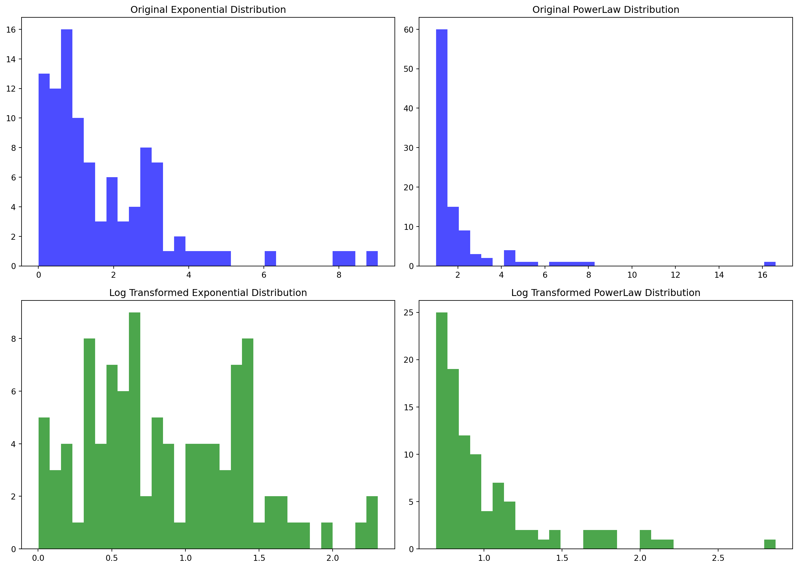
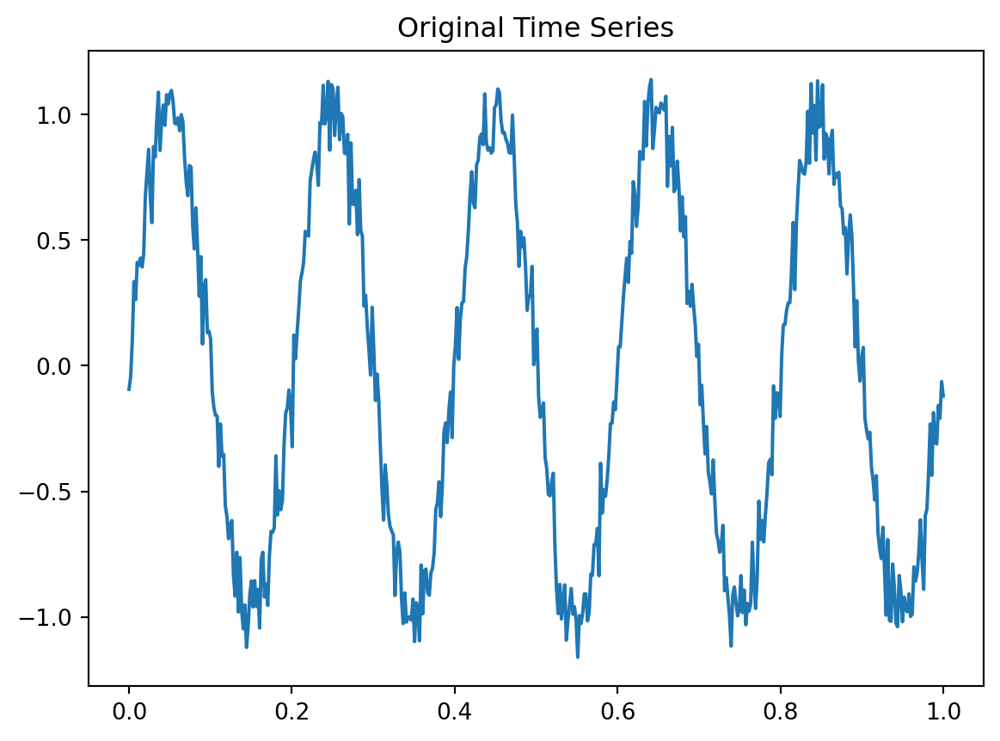
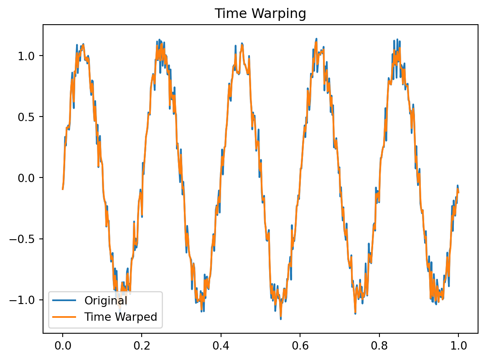
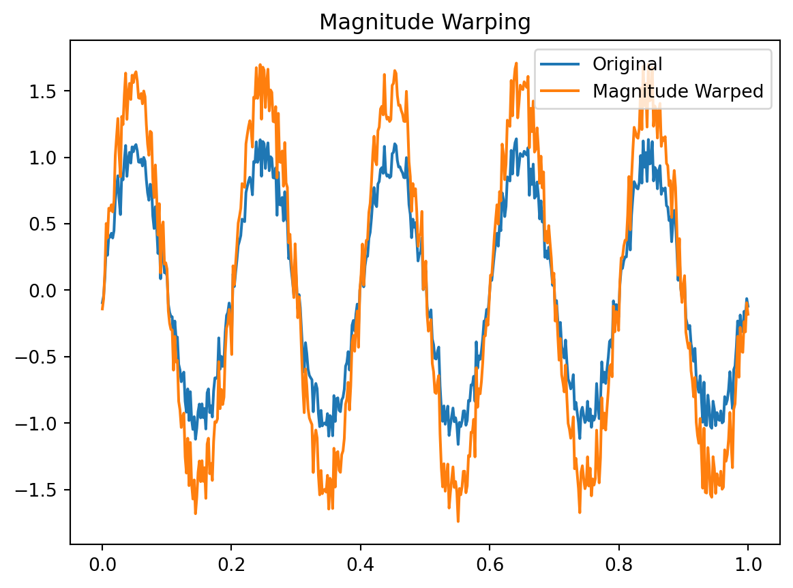
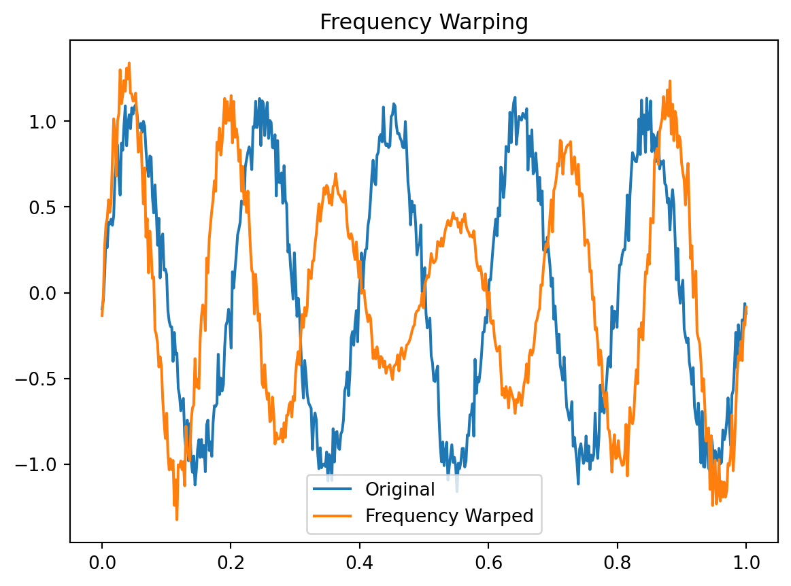
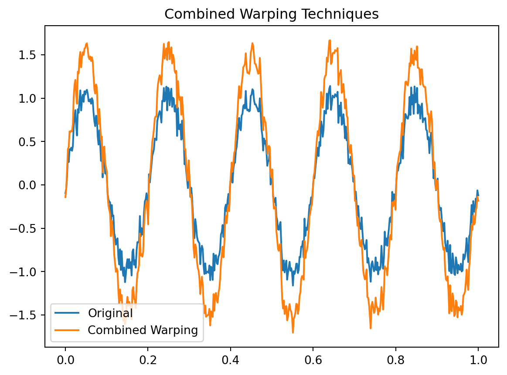
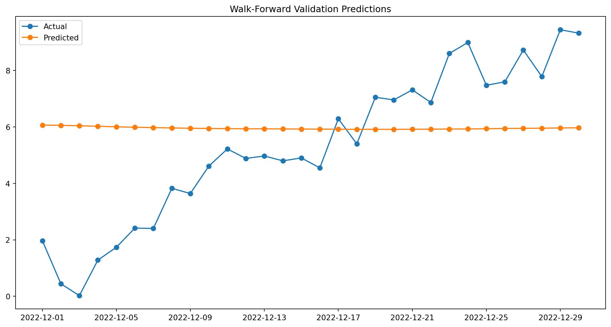

2.1. Data Cleaning
2.1.1. Handling Missing Values
2.1.1.1. Deletion Methods
- Listwise Deletion: Removing all data for an observation that has one or more missing values.
- Pros: Simplifies analysis; no imputation bias.
- Cons: Loss of data; can reduce statistical power.
- Pairwise Deletion: Using all available data points to calculate statistics, even if some observations are missing data.
- Pros: Retains more data than listwise deletion.
- Cons: Can lead to inconsistent sample sizes and biased results.
2.1.1.2. Imputation Techniques
- Mean/Median/Mode Imputation: Replacing missing values with the mean, median, or mode of the observed data.
- Pros: Simple and quick.
- Cons: Can reduce variability; might introduce bias.
- Hot Deck Imputation: Filling missing values with observed responses from similar respondents.
- Pros: Maintains data distribution.
- Cons: Assumes data similarity; can be computationally intensive.
- Cold Deck Imputation: Using values from external sources to fill missing data.
- Pros: Utilizes external reliable data.
- Cons: May not be accurate if external data is not well-matched.
- Regression Imputation: Predicting missing values using regression models based on other variables.
- Pros: Uses relationships in data.
- Cons: Assumes linear relationships; can introduce bias.
- Multiple Imputation: Creating multiple complete datasets by imputing missing values several times and then combining results.
- Pros: Reflects uncertainty of missing data; robust statistical properties.
- Cons: Complex and computationally intensive.
- K-Nearest Neighbours Imputation: Imputing values based on the k-nearest neighbours.
- Pros: Captures local structure in data.
- Cons: Computationally intensive for large datasets.
Show the code
import pandas as pd
import numpy as np
from sklearn.impute import SimpleImputer, KNNImputer
from sklearn.linear_model import LinearRegression
from sklearn.experimental import enable_iterative_imputer
from sklearn.impute import IterativeImputer
# Sample data
data = {
'A': [1, 2, np.nan, 4, 5],
'B': [np.nan, 2, 3, np.nan, 5],
'C': [1, np.nan, 3, 4, np.nan]
}
df = pd.DataFrame(data)
# 2.1. Data Cleaning
# 2.1.1. Handling Missing Values
# 2.1.1.1. Deletion Methods
# Listwise Deletion
df_listwise = df.dropna()
# Pairwise Deletion (example with calculating mean of each column)
mean_A = df['A'].mean(skipna=True)
mean_B = df['B'].mean(skipna=True)
mean_C = df['C'].mean(skipna=True)
# 2.1.1.2. Imputation Techniques
# Mean/Median/Mode Imputation
mean_imputer = SimpleImputer(strategy='mean')
df_mean_imputed = pd.DataFrame(mean_imputer.fit_transform(df), columns=df.columns)
median_imputer = SimpleImputer(strategy='median')
df_median_imputed = pd.DataFrame(median_imputer.fit_transform(df), columns=df.columns)
mode_imputer = SimpleImputer(strategy='most_frequent')
df_mode_imputed = pd.DataFrame(mode_imputer.fit_transform(df), columns=df.columns)
# Hot Deck Imputation (simple example using fillna with forward fill)
df_hot_deck = df.fillna(method='ffill')
# Cold Deck Imputation (using external data, here as an example we use a static value)
df_cold_deck = df.fillna({'A': 0, 'B': 1, 'C': 2})
# Regression Imputation (handled by IterativeImputer for simplicity)
imputer = IterativeImputer(estimator=LinearRegression(), max_iter=10, random_state=0)
df_regression_imputed = pd.DataFrame(imputer.fit_transform(df), columns=df.columns)
# Multiple Imputation (simplified example using IterativeImputer)
df_multiple_imputed = pd.DataFrame(imputer.fit_transform(df), columns=df.columns)
# K-Nearest Neighbours Imputation
knn_imputer = KNNImputer(n_neighbors=2)
df_knn_imputed = pd.DataFrame(knn_imputer.fit_transform(df), columns=df.columns)
# Output results
print("Original DataFrame:\n", df)
print("\nListwise Deletion:\n", df_listwise)
print("\nPairwise Deletion Mean A:", mean_A, "Mean B:", mean_B, "Mean C:", mean_C)
print("\nMean Imputation:\n", df_mean_imputed)
print("\nMedian Imputation:\n", df_median_imputed)
print("\nMode Imputation:\n", df_mode_imputed)
print("\nHot Deck Imputation:\n", df_hot_deck)
print("\nCold Deck Imputation:\n", df_cold_deck)
print("\nRegression Imputation:\n", df_regression_imputed)
print("\nMultiple Imputation:\n", df_multiple_imputed)
print("\nK-Nearest Neighbours Imputation:\n", df_knn_imputed)Original DataFrame:
A B C
0 1.0 NaN 1.0
1 2.0 2.0 NaN
2 NaN 3.0 3.0
3 4.0 NaN 4.0
4 5.0 5.0 NaN
Listwise Deletion:
Empty DataFrame
Columns: [A, B, C]
Index: []
Pairwise Deletion Mean A: 3.0 Mean B: 3.3333333333333335 Mean C: 2.6666666666666665
Mean Imputation:
A B C
0 1.0 3.333333 1.000000
1 2.0 2.000000 2.666667
2 3.0 3.000000 3.000000
3 4.0 3.333333 4.000000
4 5.0 5.000000 2.666667
Median Imputation:
A B C
0 1.0 3.0 1.0
1 2.0 2.0 3.0
2 3.0 3.0 3.0
3 4.0 3.0 4.0
4 5.0 5.0 3.0
Mode Imputation:
A B C
0 1.0 2.0 1.0
1 2.0 2.0 1.0
2 1.0 3.0 3.0
3 4.0 2.0 4.0
4 5.0 5.0 1.0
Hot Deck Imputation:
A B C
0 1.0 NaN 1.0
1 2.0 2.0 1.0
2 2.0 3.0 3.0
3 4.0 3.0 4.0
4 5.0 5.0 4.0
Cold Deck Imputation:
A B C
0 1.0 1.0 1.0
1 2.0 2.0 2.0
2 0.0 3.0 3.0
3 4.0 1.0 4.0
4 5.0 5.0 2.0
Regression Imputation:
A B C
0 1.0 1.0 1.0
1 2.0 2.0 2.0
2 3.0 3.0 3.0
3 4.0 4.0 4.0
4 5.0 5.0 5.0
Multiple Imputation:
A B C
0 1.0 1.0 1.0
1 2.0 2.0 2.0
2 3.0 3.0 3.0
3 4.0 4.0 4.0
4 5.0 5.0 5.0
K-Nearest Neighbours Imputation:
A B C
0 1.0 2.5 1.0
1 2.0 2.0 2.0
2 3.0 3.0 3.0
3 4.0 4.0 4.0
4 5.0 5.0 3.5/var/folders/v8/l5r44ftx4g5bx2y5fhdpcmmh0000gn/T/ipykernel_20299/2475623061.py:43: FutureWarning:
DataFrame.fillna with 'method' is deprecated and will raise in a future version. Use obj.ffill() or obj.bfill() instead.
2.1.2. Dealing with Outliers
2.1.2.1. Statistical Methods
- Z-Score Method: Identifying outliers by their z-scores, with thresholds often set at ±3 standard deviations.
- Pros: Simple and effective for normal distributions.
- Cons: Not suitable for non-normal distributions.
- IQR Method: Using the Interquartile Range (IQR) to identify outliers, typically values below Q1 - 1.5IQR or above Q3 + 1.5IQR.
- Pros: Robust to non-normal distributions.
- Cons: Can miss outliers in certain distributions.
- Boxplots: Visual method to detect outliers using the IQR.
- Pros: Easy visual identification.
- Cons: Subjective; depends on plot interpretation.
Show the code
import pandas as pd
import numpy as np
import matplotlib.pyplot as plt
from scipy.stats import zscore
# Sample data
data = {
'A': [1, 2, 3, 4, 5, 100],
'B': [10, 12, 13, 15, 12, 14],
'C': [1, 2, 2, 3, 3, 2]
}
df = pd.DataFrame(data)
# 2.1.2.1. Statistical Methods
# Z-Score Method
z_scores = np.abs(zscore(df))
outliers_z = df[(z_scores > 3).any(axis=1)]
# IQR Method
Q1 = df.quantile(0.25)
Q3 = df.quantile(0.75)
IQR = Q3 - Q1
outliers_iqr = df[((df < (Q1 - 1.5 * IQR)) | (df > (Q3 + 1.5 * IQR))).any(axis=1)]
# Boxplots
plt.figure(figsize=(10, 5))
df.boxplot()
plt.title('Boxplot for Outlier Detection')
plt.show()
# Output results
print("Original DataFrame:\n", df)
print("\nZ-Score Method Outliers:\n", outliers_z)
print("\nIQR Method Outliers:\n", outliers_iqr)Original DataFrame:
A B C
0 1 10 1
1 2 12 2
2 3 13 2
3 4 15 3
4 5 12 3
5 100 14 2
Z-Score Method Outliers:
Empty DataFrame
Columns: [A, B, C]
Index: []
IQR Method Outliers:
A B C
5 100 14 22.1.2.2. Machine Learning-Based Methods
- Isolation Forest: Anomaly detection using tree-based methods to isolate observations.
- Pros: Effective for high-dimensional data; handles anomalies naturally.
- Cons: Requires parameter tuning.
- Local Outlier Factor (LOF): Identifies anomalies based on local density deviations.
- Pros: Detects local outliers; effective in clusters.
- Cons: Computationally intensive; parameter sensitive.
- Autoencoders: Neural networks used for anomaly detection by reconstructing data and comparing reconstruction error.
- Pros: Effective for complex and high-dimensional data.
- Cons: Requires significant computational resources; complex implementation.
Show the code
import pandas as pd
import numpy as np
import matplotlib.pyplot as plt
from sklearn.ensemble import IsolationForest
from sklearn.neighbors import LocalOutlierFactor
from sklearn.preprocessing import StandardScaler
from sklearn.model_selection import train_test_split
from sklearn.metrics import roc_auc_score
# Sample data
data = {
'A': [1, 2, 3, 4, 5, 100],
'B': [10, 12, 13, 15, 12, 14],
'C': [1, 2, 2, 3, 3, 2]
}
df = pd.DataFrame(data)
# Standardize data
scaler = StandardScaler()
df_scaled = scaler.fit_transform(df)
# 2.1.2.2. Machine Learning-Based Methods
# Isolation Forest
iso_forest = IsolationForest(contamination=0.1, random_state=42)
df['IsolationForest_Outlier'] = iso_forest.fit_predict(df_scaled)
# Local Outlier Factor (LOF)
lof = LocalOutlierFactor(n_neighbors=20, contamination=0.1)
df['LOF_Outlier'] = lof.fit_predict(df_scaled)
# Autoencoders (simplified example using PCA for reconstruction error)
from sklearn.decomposition import PCA
# PCA for reconstruction
pca = PCA(n_components=2)
df_pca = pca.fit_transform(df_scaled)
df_reconstructed = pca.inverse_transform(df_pca)
reconstruction_error = np.mean((df_scaled - df_reconstructed)**2, axis=1)
# Define outliers based on reconstruction error threshold
threshold = np.percentile(reconstruction_error, 90)
df['Autoencoder_Outlier'] = np.where(reconstruction_error > threshold, -1, 1)
# Output results
print("Original DataFrame:\n", df)
print("\nIsolation Forest Outliers:\n", df[df['IsolationForest_Outlier'] == -1])
print("\nLocal Outlier Factor Outliers:\n", df[df['LOF_Outlier'] == -1])
print("\nAutoencoder Outliers:\n", df[df['Autoencoder_Outlier'] == -1])
# Visualization of Outliers
plt.figure(figsize=(12, 6))
plt.subplot(1, 3, 1)
plt.scatter(df.index, df['A'], c=df['IsolationForest_Outlier'], cmap='coolwarm')
plt.title('Isolation Forest')
plt.subplot(1, 3, 2)
plt.scatter(df.index, df['A'], c=df['LOF_Outlier'], cmap='coolwarm')
plt.title('Local Outlier Factor')
plt.subplot(1, 3, 3)
plt.scatter(df.index, df['A'], c=df['Autoencoder_Outlier'], cmap='coolwarm')
plt.title('Autoencoder')
plt.tight_layout()
plt.show()/Users/ravishankar/miniforge3/lib/python3.10/site-packages/sklearn/neighbors/_lof.py:282: UserWarning:
n_neighbors (20) is greater than the total number of samples (6). n_neighbors will be set to (n_samples - 1) for estimation.
Original DataFrame:
A B C IsolationForest_Outlier LOF_Outlier Autoencoder_Outlier
0 1 10 1 1 1 1
1 2 12 2 1 1 1
2 3 13 2 1 -1 1
3 4 15 3 1 1 1
4 5 12 3 1 1 -1
5 100 14 2 -1 1 1
Isolation Forest Outliers:
A B C IsolationForest_Outlier LOF_Outlier Autoencoder_Outlier
5 100 14 2 -1 1 1
Local Outlier Factor Outliers:
A B C IsolationForest_Outlier LOF_Outlier Autoencoder_Outlier
2 3 13 2 1 -1 1
Autoencoder Outliers:
A B C IsolationForest_Outlier LOF_Outlier Autoencoder_Outlier
4 5 12 3 1 1 -12.1.3. Correcting Inconsistent Data
- Standardisation of Data Entry: Ensuring data follows consistent formats, such as date formats, units of measurement, etc.
- Normalization: Adjusting values measured on different scales to a common scale.
- Validation Rules: Applying rules to ensure data consistency, such as constraints and business rules.
- Manual Review and Correction: Manually identifying and correcting inconsistent data entries.
- Automated Tools: Using software tools to detect and correct inconsistencies.
2.1.4. Handling Duplicate Data
- Exact Matching: Identifying duplicates by comparing data fields exactly.
- Pros: Simple and quick.
- Cons: Misses near-duplicates due to minor differences.
- Fuzzy Matching: Identifying near-duplicates using similarity measures like Levenshtein distance, Jaccard similarity, etc.
- Pros: Captures more duplicates; robust to minor differences.
- Cons: More complex and computationally intensive.
- Machine Learning Approaches: Using clustering and classification algorithms to detect duplicates.
- Pros: Can handle complex and large datasets; adaptive.
- Cons: Requires training data and parameter tuning.
- Rule-Based Systems: Applying predefined rules to identify duplicates, such as matching on key fields.
- Pros: Tailored to specific needs; interpretable.
- Cons: Rigid; requires maintenance and updating.
Show the code
import pandas as pd
import numpy as np
from fuzzywuzzy import fuzz, process
from sklearn.cluster import DBSCAN
from sklearn.preprocessing import StandardScaler
# Sample data with duplicates
data = {
'Name': ['John Doe', 'Jane Smith', 'John Doe', 'Jane Smith', 'Jake Doe', 'Jon Doe'],
'Age': [28, 34, 28, 34, 29, 28],
'City': ['New York', 'Los Angeles', 'New York', 'LA', 'Chicago', 'New York']
}
df = pd.DataFrame(data)
# 2.1.4. Handling Duplicate Data
# Exact Matching
exact_duplicates = df[df.duplicated()]
# Fuzzy Matching using Levenshtein distance
def fuzzy_match(df, column, threshold=90):
matches = []
for i, value in enumerate(df[column]):
for j, other_value in enumerate(df[column]):
if i != j:
score = fuzz.ratio(value, other_value)
if score > threshold:
matches.append((i, j, score))
return matches
fuzzy_matches = fuzzy_match(df, 'Name')
# Machine Learning Approaches using DBSCAN
scaler = StandardScaler()
df_scaled = scaler.fit_transform(df.select_dtypes(include=[np.number]))
dbscan = DBSCAN(eps=0.5, min_samples=2)
df['Cluster'] = dbscan.fit_predict(df_scaled)
ml_duplicates = df[df['Cluster'] != -1]
# Rule-Based Systems
def rule_based_duplicates(df):
rules = [
df['Name'].duplicated(),
(df['Age'] == 28) & (df['City'] == 'New York')
]
return df[np.any(rules, axis=0)]
rule_based = rule_based_duplicates(df)
# Output results
print("Original DataFrame:\n", df)
print("\nExact Duplicates:\n", exact_duplicates)
print("\nFuzzy Matches (indexes and score):\n", fuzzy_matches)
print("\nMachine Learning-Based Duplicates:\n", ml_duplicates)
print("\nRule-Based Duplicates:\n", rule_based)/Users/ravishankar/miniforge3/lib/python3.10/site-packages/fuzzywuzzy/fuzz.py:11: UserWarning:
Using slow pure-python SequenceMatcher. Install python-Levenshtein to remove this warning
Original DataFrame:
Name Age City Cluster
0 John Doe 28 New York 0
1 Jane Smith 34 Los Angeles 1
2 John Doe 28 New York 0
3 Jane Smith 34 LA 1
4 Jake Doe 29 Chicago 0
5 Jon Doe 28 New York 0
Exact Duplicates:
Name Age City
2 John Doe 28 New York
Fuzzy Matches (indexes and score):
[(0, 2, 100), (0, 5, 93), (1, 3, 100), (2, 0, 100), (2, 5, 93), (3, 1, 100), (5, 0, 93), (5, 2, 93)]
Machine Learning-Based Duplicates:
Name Age City Cluster
0 John Doe 28 New York 0
1 Jane Smith 34 Los Angeles 1
2 John Doe 28 New York 0
3 Jane Smith 34 LA 1
4 Jake Doe 29 Chicago 0
5 Jon Doe 28 New York 0
Rule-Based Duplicates:
Name Age City Cluster
0 John Doe 28 New York 0
2 John Doe 28 New York 0
3 Jane Smith 34 LA 1
5 Jon Doe 28 New York 02.2 Feature Scaling and Normalization
Feature scaling and normalization are crucial steps in data preprocessing, especially for machine learning algorithms. They ensure that features contribute equally to the model’s performance, improving convergence and accuracy. Below is a comprehensive guide from basic to advanced levels.
2.2.1 Min-Max Scaling
Min-Max scaling, also known as normalization, rescales the feature to a fixed range, usually [0, 1]. This transformation is defined as:
\[ x' = \frac{x - \min(x)}{\max(x) - \min(x)} \]
Min-Max scaling is sensitive to outliers since it uses the minimum and maximum values of the features. It’s most useful when the data distribution is not Gaussian and varies in scales.
For advanced applications, Min-Max scaling can be extended to any desired range [a, b]:
\[ x' = a + \frac{(x - \min(x)) \times (b - a)}{\max(x) - \min(x)} \]
Understanding the impact of Min-Max scaling on model performance and ensuring the transformation is applied consistently in training and test datasets are critical aspects at this level.
Show the code
import pandas as pd
import numpy as np
from sklearn.preprocessing import MinMaxScaler
import matplotlib.pyplot as plt
# Sample data
data = {
'A': [1, 2, 3, 4, 5, 100],
'B': [10, 12, 13, 15, 12, 14],
'C': [1, 2, 2, 3, 3, 2]
}
df = pd.DataFrame(data)
# 2.2 Feature Scaling and Normalization
# 2.2.1 Min-Max Scaling
# Applying Min-Max Scaling to scale features to [0, 1]
min_max_scaler = MinMaxScaler()
df_min_max_scaled = pd.DataFrame(min_max_scaler.fit_transform(df), columns=df.columns)
# Function to apply Min-Max Scaling to any desired range [a, b]
def min_max_scale(df, feature_range=(0, 1)):
scaler = MinMaxScaler(feature_range=feature_range)
return pd.DataFrame(scaler.fit_transform(df), columns=df.columns)
# Applying Min-Max Scaling to scale features to [-1, 1]
df_min_max_scaled_custom = min_max_scale(df, feature_range=(-1, 1))
# Plotting original and scaled data
plt.figure(figsize=(12, 6))
plt.subplot(1, 3, 1)
plt.scatter(df.index, df['A'], c='blue', label='Original')
plt.title('Original Data')
plt.xlabel('Index')
plt.ylabel('Values')
plt.subplot(1, 3, 2)
plt.scatter(df_min_max_scaled.index, df_min_max_scaled['A'], c='green', label='Scaled [0, 1]')
plt.title('Min-Max Scaled [0, 1]')
plt.xlabel('Index')
plt.ylabel('Values')
plt.subplot(1, 3, 3)
plt.scatter(df_min_max_scaled_custom.index, df_min_max_scaled_custom['A'], c='red', label='Scaled [-1, 1]')
plt.title('Min-Max Scaled [-1, 1]')
plt.xlabel('Index')
plt.ylabel('Values')
plt.tight_layout()
plt.show()
# Output results
print("Original DataFrame:\n", df)
print("\nMin-Max Scaled DataFrame [0, 1]:\n", df_min_max_scaled)
print("\nMin-Max Scaled DataFrame [-1, 1]:\n", df_min_max_scaled_custom)Original DataFrame:
A B C
0 1 10 1
1 2 12 2
2 3 13 2
3 4 15 3
4 5 12 3
5 100 14 2
Min-Max Scaled DataFrame [0, 1]:
A B C
0 0.000000 0.0 0.0
1 0.010101 0.4 0.5
2 0.020202 0.6 0.5
3 0.030303 1.0 1.0
4 0.040404 0.4 1.0
5 1.000000 0.8 0.5
Min-Max Scaled DataFrame [-1, 1]:
A B C
0 -1.000000 -1.0 -1.0
1 -0.979798 -0.2 0.0
2 -0.959596 0.2 0.0
3 -0.939394 1.0 1.0
4 -0.919192 -0.2 1.0
5 1.000000 0.6 0.02.2.2 Standardization (Z-score normalization)
Standardization transforms the data to have a mean of 0 and a standard deviation of 1. This is achieved by the formula:
\[ x' = \frac{x - \mu}{\sigma} \]
where $ $ is the mean of the feature and $ $ is the standard deviation.
Standardization is particularly useful when the features have different units or the data follows a Gaussian distribution. It centres the data and scales it to unit variance.
At the advanced level, consider the following aspects:
Handling datasets with outliers and how they affect the mean and standard deviation.
Applying standardization in the presence of skewed data distributions.
Understanding the mathematical properties and implications of the transformation in high-dimensional spaces.
Show the code
import pandas as pd
import numpy as np
from sklearn.preprocessing import StandardScaler
import matplotlib.pyplot as plt
# Sample data
data = {
'A': [1, 2, 3, 4, 5, 100],
'B': [10, 12, 13, 15, 12, 14],
'C': [1, 2, 2, 3, 3, 2]
}
df = pd.DataFrame(data)
# 2.2.2 Standardization (Z-score normalization)
# Applying Standardization to scale features to mean 0 and standard deviation 1
standard_scaler = StandardScaler()
df_standardized = pd.DataFrame(standard_scaler.fit_transform(df), columns=df.columns)
# Function to calculate Z-score
def z_score_standardize(series):
return (series - series.mean()) / series.std()
# Applying Z-score standardization manually for each column
df_manual_standardized = df.apply(z_score_standardize)
# Plotting original and standardized data
plt.figure(figsize=(12, 6))
plt.subplot(1, 3, 1)
plt.scatter(df.index, df['A'], c='blue', label='Original')
plt.title('Original Data')
plt.xlabel('Index')
plt.ylabel('Values')
plt.subplot(1, 3, 2)
plt.scatter(df_standardized.index, df_standardized['A'], c='green', label='Standardized (sklearn)')
plt.title('Standardized Data (sklearn)')
plt.xlabel('Index')
plt.ylabel('Values')
plt.subplot(1, 3, 3)
plt.scatter(df_manual_standardized.index, df_manual_standardized['A'], c='red', label='Standardized (manual)')
plt.title('Standardized Data (manual)')
plt.xlabel('Index')
plt.ylabel('Values')
plt.tight_layout()
plt.show()
# Output results
print("Original DataFrame:\n", df)
print("\nStandardized DataFrame (sklearn):\n", df_standardized)
print("\nStandardized DataFrame (manual):\n", df_manual_standardized)
# Advanced Considerations
# Handling outliers in datasets
outliers = df[(np.abs(df_standardized) > 3).any(axis=1)]
print("\nDetected Outliers:\n", outliers)
# Skewed data distributions
skewed_data = {
'A': [1, 2, 3, 4, 5, 100],
'B': [10, 10, 10, 10, 10, 10],
'C': [1, 2, 3, 4, 5, 6]
}
df_skewed = pd.DataFrame(skewed_data)
df_skewed_standardized = pd.DataFrame(standard_scaler.fit_transform(df_skewed), columns=df_skewed.columns)
print("\nStandardized Skewed DataFrame:\n", df_skewed_standardized)Original DataFrame:
A B C
0 1 10 1
1 2 12 2
2 3 13 2
3 4 15 3
4 5 12 3
5 100 14 2
Standardized DataFrame (sklearn):
A B C
0 -0.502219 -1.668115 -1.697749
1 -0.474574 -0.417029 -0.242536
2 -0.446929 0.208514 -0.242536
3 -0.419284 1.459601 1.212678
4 -0.391639 -0.417029 1.212678
5 2.234643 0.834058 -0.242536
Standardized DataFrame (manual):
A B C
0 -0.458461 -1.522774 -1.549826
1 -0.433225 -0.380693 -0.221404
2 -0.407988 0.190347 -0.221404
3 -0.382752 1.332427 1.107019
4 -0.357515 -0.380693 1.107019
5 2.039941 0.761387 -0.221404
Detected Outliers:
Empty DataFrame
Columns: [A, B, C]
Index: []
Standardized Skewed DataFrame:
A B C
0 -0.502219 0.0 -1.46385
1 -0.474574 0.0 -0.87831
2 -0.446929 0.0 -0.29277
3 -0.419284 0.0 0.29277
4 -0.391639 0.0 0.87831
5 2.234643 0.0 1.463852.2.3 Robust Scaling
Robust scaling uses statistics that are robust to outliers, specifically the median and the interquartile range (IQR). The transformation is given by:
\[ x' = \frac{x - \text{median}(x)}{\text{IQR}(x)} \]
The interquartile range (IQR) is the difference between the 75th and 25th percentiles. Robust scaling is less sensitive to outliers compared to Min-Max scaling and standardization.
Advanced considerations include:
The effect of different types of outliers on the scaling process.
Application of robust scaling to various data distributions.
Combining robust scaling with other preprocessing techniques for optimal performance.
Show the code
import pandas as pd
import numpy as np
from sklearn.preprocessing import RobustScaler
import matplotlib.pyplot as plt
# Sample data with outliers
data = {
'A': [1, 2, 3, 4, 5, 100],
'B': [10, 12, 13, 15, 12, 14],
'C': [1, 2, 2, 3, 3, 2]
}
df = pd.DataFrame(data)
# 2.2.3 Robust Scaling
# Applying Robust Scaling to scale features using median and IQR
robust_scaler = RobustScaler()
df_robust_scaled = pd.DataFrame(robust_scaler.fit_transform(df), columns=df.columns)
# Function to manually calculate Robust Scaling
def robust_scale(series):
median = series.median()
iqr = series.quantile(0.75) - series.quantile(0.25)
return (series - median) / iqr
# Applying Robust Scaling manually for each column
df_manual_robust_scaled = df.apply(robust_scale)
# Plotting original and robust scaled data
plt.figure(figsize=(12, 6))
plt.subplot(1, 3, 1)
plt.scatter(df.index, df['A'], c='blue', label='Original')
plt.title('Original Data')
plt.xlabel('Index')
plt.ylabel('Values')
plt.subplot(1, 3, 2)
plt.scatter(df_robust_scaled.index, df_robust_scaled['A'], c='green', label='Robust Scaled (sklearn)')
plt.title('Robust Scaled Data (sklearn)')
plt.xlabel('Index')
plt.ylabel('Values')
plt.subplot(1, 3, 3)
plt.scatter(df_manual_robust_scaled.index, df_manual_robust_scaled['A'], c='red', label='Robust Scaled (manual)')
plt.title('Robust Scaled Data (manual)')
plt.xlabel('Index')
plt.ylabel('Values')
plt.tight_layout()
plt.show()
# Output results
print("Original DataFrame:\n", df)
print("\nRobust Scaled DataFrame (sklearn):\n", df_robust_scaled)
print("\nRobust Scaled DataFrame (manual):\n", df_manual_robust_scaled)
# Advanced Considerations
# Effect of different types of outliers
outliers = df[(np.abs(df_robust_scaled) > 3).any(axis=1)]
print("\nDetected Outliers after Robust Scaling:\n", outliers)
# Application to various data distributions
different_distributions = {
'Normal': np.random.normal(size=100),
'Uniform': np.random.uniform(size=100),
'Skewed': np.random.exponential(size=100)
}
df_distributions = pd.DataFrame(different_distributions)
df_distributions_robust_scaled = pd.DataFrame(robust_scaler.fit_transform(df_distributions), columns=df_distributions.columns)
print("\nRobust Scaled DataFrame for Different Distributions:\n", df_distributions_robust_scaled)Original DataFrame:
A B C
0 1 10 1
1 2 12 2
2 3 13 2
3 4 15 3
4 5 12 3
5 100 14 2
Robust Scaled DataFrame (sklearn):
A B C
0 -1.0 -1.428571 -1.333333
1 -0.6 -0.285714 0.000000
2 -0.2 0.285714 0.000000
3 0.2 1.428571 1.333333
4 0.6 -0.285714 1.333333
5 38.6 0.857143 0.000000
Robust Scaled DataFrame (manual):
A B C
0 -1.0 -1.428571 -1.333333
1 -0.6 -0.285714 0.000000
2 -0.2 0.285714 0.000000
3 0.2 1.428571 1.333333
4 0.6 -0.285714 1.333333
5 38.6 0.857143 0.000000
Detected Outliers after Robust Scaling:
A B C
5 100 14 2
Robust Scaled DataFrame for Different Distributions:
Normal Uniform Skewed
0 -0.356526 0.076544 -0.526567
1 0.417068 0.049326 -0.391730
2 0.423635 -0.262941 -0.485219
3 -0.585500 0.645111 -0.010001
4 1.060866 0.211180 -0.548701
.. ... ... ...
95 -0.270829 -0.839940 0.086674
96 0.007962 -0.791294 -0.482408
97 0.899137 -0.222425 1.140212
98 0.413091 -0.362783 1.324141
99 -0.954352 -0.773522 -0.245877
[100 rows x 3 columns]2.2.4 Log Transformation
Log transformation helps in handling skewed data by compressing the range of the data. It is defined as:
\[ x' = \log(x + 1) \]
The constant 1 is added to avoid issues with taking the log of zero.
Log transformation is useful for features that follow an exponential or power-law distribution. It reduces the skewness and brings the data closer to a Gaussian distribution.
Advanced topics include:
Applying log transformation to different types of skewed distributions.
Understanding the implications of the transformation in the context of machine learning algorithms.
Combining log transformation with other scaling techniques for better performance.
Show the code
import pandas as pd
import numpy as np
import matplotlib.pyplot as plt
# Sample skewed data
data = {
'A': [1, 2, 3, 4, 5, 100],
'B': [10, 12, 13, 15, 12, 14],
'C': [1, 2, 2, 3, 3, 2]
}
df = pd.DataFrame(data)
# 2.2.4 Log Transformation
# Applying Log Transformation
df_log_transformed = df.applymap(lambda x: np.log1p(x))
# Function to apply log transformation
def log_transform(series):
return np.log1p(series)
# Applying Log Transformation manually for each column
df_manual_log_transformed = df.apply(log_transform)
# Plotting original and log-transformed data
plt.figure(figsize=(12, 6))
plt.subplot(1, 3, 1)
plt.scatter(df.index, df['A'], c='blue', label='Original')
plt.title('Original Data')
plt.xlabel('Index')
plt.ylabel('Values')
plt.subplot(1, 3, 2)
plt.scatter(df_log_transformed.index, df_log_transformed['A'], c='green', label='Log Transformed (applymap)')
plt.title('Log Transformed Data (applymap)')
plt.xlabel('Index')
plt.ylabel('Values')
plt.subplot(1, 3, 3)
plt.scatter(df_manual_log_transformed.index, df_manual_log_transformed['A'], c='red', label='Log Transformed (manual)')
plt.title('Log Transformed Data (manual)')
plt.xlabel('Index')
plt.ylabel('Values')
plt.tight_layout()
plt.show()
# Output results
print("Original DataFrame:\n", df)
print("\nLog Transformed DataFrame (applymap):\n", df_log_transformed)
print("\nLog Transformed DataFrame (manual):\n", df_manual_log_transformed)
# Advanced Considerations
# Applying log transformation to different skewed distributions
skewed_data = {
'Exponential': np.random.exponential(scale=2, size=100),
'PowerLaw': np.random.pareto(a=2, size=100) + 1
}
df_skewed = pd.DataFrame(skewed_data)
df_skewed_log_transformed = df_skewed.applymap(lambda x: np.log1p(x))
print("\nOriginal Skewed DataFrame:\n", df_skewed)
print("\nLog Transformed Skewed DataFrame:\n", df_skewed_log_transformed)
# Visualizing the distributions before and after log transformation
fig, axes = plt.subplots(2, 2, figsize=(14, 10))
for i, col in enumerate(df_skewed.columns):
axes[0, i].hist(df_skewed[col], bins=30, color='blue', alpha=0.7)
axes[0, i].set_title(f'Original {col} Distribution')
axes[1, i].hist(df_skewed_log_transformed[col], bins=30, color='green', alpha=0.7)
axes[1, i].set_title(f'Log Transformed {col} Distribution')
plt.tight_layout()
plt.show()/var/folders/v8/l5r44ftx4g5bx2y5fhdpcmmh0000gn/T/ipykernel_20299/3728224437.py:15: FutureWarning:
DataFrame.applymap has been deprecated. Use DataFrame.map instead.
Original DataFrame:
A B C
0 1 10 1
1 2 12 2
2 3 13 2
3 4 15 3
4 5 12 3
5 100 14 2
Log Transformed DataFrame (applymap):
A B C
0 0.693147 2.397895 0.693147
1 1.098612 2.564949 1.098612
2 1.386294 2.639057 1.098612
3 1.609438 2.772589 1.386294
4 1.791759 2.564949 1.386294
5 4.615121 2.708050 1.098612
Log Transformed DataFrame (manual):
A B C
0 0.693147 2.397895 0.693147
1 1.098612 2.564949 1.098612
2 1.386294 2.639057 1.098612
3 1.609438 2.772589 1.386294
4 1.791759 2.564949 1.386294
5 4.615121 2.708050 1.098612
Original Skewed DataFrame:
Exponential PowerLaw
0 1.906811 1.072804
1 2.755858 1.096370
2 2.741588 1.727950
3 3.341742 1.655206
4 0.723236 1.196989
.. ... ...
95 1.477264 1.301568
96 1.272792 3.624408
97 0.871978 1.202865
98 0.152154 1.081406
99 0.692300 1.810866
[100 rows x 2 columns]
Log Transformed Skewed DataFrame:
Exponential PowerLaw
0 1.067057 0.728902
1 1.323317 0.740207
2 1.319510 1.003550
3 1.468276 0.976522
4 0.544204 0.787088
.. ... ...
95 0.907155 0.833591
96 0.821009 1.531348
97 0.626996 0.789759
98 0.141633 0.733044
99 0.526089 1.033493
[100 rows x 2 columns]/var/folders/v8/l5r44ftx4g5bx2y5fhdpcmmh0000gn/T/ipykernel_20299/3728224437.py:62: FutureWarning:
DataFrame.applymap has been deprecated. Use DataFrame.map instead.

2.2.5 Box-Cox Transformation
Box-Cox transformation is a family of power transformations indexed by a parameter \(\lambda\). It is defined as:
\[ y(\lambda) = \begin{cases} \frac{y^\lambda - 1}{\lambda}, & \text{if } \lambda \neq 0 \\ \log(y), & \text{if } \lambda = 0 \end{cases} \]
Box-Cox transformation is useful for stabilizing variance and making the data more Gaussian-like. The parameter \(\lambda\) is estimated using maximum likelihood estimation.
For advanced applications:
Understanding the mathematical derivation and properties of the Box-Cox transformation.
Applying the transformation to multivariate data and analysing its impact.
Integrating Box-Cox transformation with other advanced preprocessing and modelling techniques.
Show the code
import pandas as pd
import numpy as np
import matplotlib.pyplot as plt
from scipy.stats import boxcox
from scipy.special import inv_boxcox
# Sample skewed data
data = {
'A': [1, 2, 3, 4, 5, 100],
'B': [10, 12, 13, 15, 12, 14],
'C': [1, 2, 2, 3, 3, 2]
}
df = pd.DataFrame(data)
# 2.2.5 Box-Cox Transformation
# Applying Box-Cox Transformation
df_boxcox_transformed = pd.DataFrame()
# Apply Box-Cox transformation to each column (Box-Cox requires positive data)
for col in df.columns:
df_boxcox_transformed[col], fitted_lambda = boxcox(df[col] + 1) # Adding 1 to avoid issues with zero values
print(f'Lambda for {col}: {fitted_lambda}')
# Function to apply Box-Cox transformation
def boxcox_transform(series):
transformed, fitted_lambda = boxcox(series + 1)
return transformed, fitted_lambda
# Applying Box-Cox Transformation manually for each column
df_manual_boxcox_transformed = pd.DataFrame()
lambdas = {}
for col in df.columns:
df_manual_boxcox_transformed[col], lambdas[col] = boxcox_transform(df[col])
# Plotting original and Box-Cox transformed data
plt.figure(figsize=(12, 6))
plt.subplot(1, 3, 1)
plt.scatter(df.index, df['A'], c='blue', label='Original')
plt.title('Original Data')
plt.xlabel('Index')
plt.ylabel('Values')
plt.subplot(1, 3, 2)
plt.scatter(df_boxcox_transformed.index, df_boxcox_transformed['A'], c='green', label='Box-Cox Transformed (scipy)')
plt.title('Box-Cox Transformed Data (scipy)')
plt.xlabel('Index')
plt.ylabel('Values')
plt.subplot(1, 3, 3)
plt.scatter(df_manual_boxcox_transformed.index, df_manual_boxcox_transformed['A'], c='red', label='Box-Cox Transformed (manual)')
plt.title('Box-Cox Transformed Data (manual)')
plt.xlabel('Index')
plt.ylabel('Values')
plt.tight_layout()
plt.show()
# Output results
print("Original DataFrame:\n", df)
print("\nBox-Cox Transformed DataFrame (scipy):\n", df_boxcox_transformed)
print("\nBox-Cox Transformed DataFrame (manual):\n", df_manual_boxcox_transformed)
# Advanced Considerations
# Applying Box-Cox transformation to different skewed distributions
skewed_data = {
'Exponential': np.random.exponential(scale=2, size=100),
'PowerLaw': np.random.pareto(a=2, size=100) + 1
}
df_skewed = pd.DataFrame(skewed_data)
df_skewed_boxcox_transformed = pd.DataFrame()
lambdas_skewed = {}
for col in df_skewed.columns:
df_skewed_boxcox_transformed[col], lambdas_skewed[col] = boxcox_transform(df_skewed[col])
print("\nOriginal Skewed DataFrame:\n", df_skewed)
print("\nBox-Cox Transformed Skewed DataFrame:\n", df_skewed_boxcox_transformed)
# Visualizing the distributions before and after Box-Cox transformation
fig, axes = plt.subplots(2, 2, figsize=(14, 10))
for i, col in enumerate(df_skewed.columns):
axes[0, i].hist(df_skewed[col], bins=30, color='blue', alpha=0.7)
axes[0, i].set_title(f'Original {col} Distribution')
axes[1, i].hist(df_skewed_boxcox_transformed[col], bins=30, color='green', alpha=0.7)
axes[1, i].set_title(f'Box-Cox Transformed {col} Distribution')
plt.tight_layout()
plt.show()Lambda for A: -0.6948827121821288
Lambda for B: 1.6211440208702976
Lambda for C: 1.345269264290123Original DataFrame:
A B C
0 1 10 1
1 2 12 2
2 3 13 2
3 4 15 3
4 5 12 3
5 100 14 2
Box-Cox Transformed DataFrame (scipy):
A B C
0 0.550079 29.473411 1.145329
1 0.768366 38.832607 2.515377
2 0.889896 43.868502 2.515377
3 0.968779 54.620181 4.055354
4 1.024744 38.832607 4.055354
5 1.380839 49.132995 2.515377
Box-Cox Transformed DataFrame (manual):
A B C
0 0.550079 29.473411 1.145329
1 0.768366 38.832607 2.515377
2 0.889896 43.868502 2.515377
3 0.968779 54.620181 4.055354
4 1.024744 38.832607 4.055354
5 1.380839 49.132995 2.515377
Original Skewed DataFrame:
Exponential PowerLaw
0 1.816835 1.175111
1 2.429203 1.095880
2 0.362405 5.488890
3 0.159528 1.560426
4 2.080300 1.526427
.. ... ...
95 1.941602 1.056733
96 0.654848 1.649614
97 0.880464 2.103837
98 2.401227 5.330780
99 0.409299 1.854550
[100 rows x 2 columns]
Box-Cox Transformed Skewed DataFrame:
Exponential PowerLaw
0 0.892654 0.366375
1 1.033560 0.359675
2 0.295593 0.436567
3 0.144835 0.389995
4 0.957713 0.388369
.. ... ...
95 0.924403 0.356049
96 0.468145 0.393942
97 0.576295 0.408697
98 1.027854 0.436195
99 0.326336 0.401546
[100 rows x 2 columns]2.3 Encoding Categorical Variables
Encoding categorical variables is a crucial step in data preprocessing, enabling machine learning algorithms to handle non-numeric data effectively. Below is a comprehensive guide from basic to advanced levels.
2.3.1 One-hot Encoding
One-hot encoding converts categorical variables into a binary matrix, where each category is represented by a one-hot vector. For example, a categorical feature with three categories, Red, Green, and Blue, would be encoded as:
Red -> [1, 0, 0]
Green -> [0, 1, 0]
Blue -> [0, 0, 1]
One-hot encoding is useful for nominal (unordered) categories. It avoids ordinal relationships among categories, making it suitable for algorithms like linear regression.
Advanced considerations include:
Handling high cardinality features, which can lead to a large number of binary columns.
Memory efficiency and computational considerations in high-dimensional datasets.
Using sparse matrices to efficiently store one-hot encoded features.
Show the code
import pandas as pd
from sklearn.preprocessing import OneHotEncoder
# Sample data with categorical features
data = {
'Color': ['Red', 'Green', 'Blue', 'Green', 'Red', 'Blue'],
'Size': ['S', 'M', 'L', 'M', 'S', 'L']
}
df = pd.DataFrame(data)
# 2.3.1 One-hot Encoding
# Applying One-hot Encoding using pandas
df_one_hot = pd.get_dummies(df)
# Advanced: Handling high cardinality features
# Sample data with a high cardinality feature
high_card_data = {
'ID': range(1000),
'Category': ['Category_' + str(i % 100) for i in range(1000)] # 100 unique categories
}
df_high_card = pd.DataFrame(high_card_data)
# Applying One-hot Encoding to high cardinality feature using pandas
df_high_card_one_hot = pd.get_dummies(df_high_card, columns=['Category'])
# Using sparse matrices to efficiently store one-hot encoded features
from scipy.sparse import csr_matrix
# Converting to sparse matrix
sparse_matrix = csr_matrix(pd.get_dummies(df_high_card['Category']))
# Output results
print("Original DataFrame:\n", df)
print("\nOne-hot Encoded DataFrame:\n", df_one_hot)
print("\nHigh Cardinality DataFrame:\n", df_high_card.head())
print("\nOne-hot Encoded High Cardinality DataFrame (first 5 columns):\n", df_high_card_one_hot.iloc[:, :5])
# Demonstrating the memory efficiency of sparse matrix
print("\nSparse Matrix Shape:", sparse_matrix.shape)
print("Sparse Matrix Memory Usage:", sparse_matrix.data.nbytes, "bytes")
# Visualising the encoded features for original dataframe
print("\nOne-hot Encoded Features for Original DataFrame:\n", df_one_hot)Original DataFrame:
Color Size
0 Red S
1 Green M
2 Blue L
3 Green M
4 Red S
5 Blue L
One-hot Encoded DataFrame:
Color_Blue Color_Green Color_Red Size_L Size_M Size_S
0 False False True False False True
1 False True False False True False
2 True False False True False False
3 False True False False True False
4 False False True False False True
5 True False False True False False
High Cardinality DataFrame:
ID Category
0 0 Category_0
1 1 Category_1
2 2 Category_2
3 3 Category_3
4 4 Category_4
One-hot Encoded High Cardinality DataFrame (first 5 columns):
ID Category_Category_0 Category_Category_1 Category_Category_10 \
0 0 True False False
1 1 False True False
2 2 False False False
3 3 False False False
4 4 False False False
.. ... ... ... ...
995 995 False False False
996 996 False False False
997 997 False False False
998 998 False False False
999 999 False False False
Category_Category_11
0 False
1 False
2 False
3 False
4 False
.. ...
995 False
996 False
997 False
998 False
999 False
[1000 rows x 5 columns]
Sparse Matrix Shape: (1000, 100)
Sparse Matrix Memory Usage: 1000 bytes
One-hot Encoded Features for Original DataFrame:
Color_Blue Color_Green Color_Red Size_L Size_M Size_S
0 False False True False False True
1 False True False False True False
2 True False False True False False
3 False True False False True False
4 False False True False False True
5 True False False True False False2.3.2 Label Encoding
Label encoding converts categorical variables into numeric labels, assigning a unique integer to each category. For example:
Red -> 0
Green -> 1
Blue -> 2
Label encoding is suitable for ordinal categories where the order matters. However, it can introduce ordinal relationships in nominal categories, which may not be appropriate.
Advanced topics include:
Combining label encoding with other encoding techniques for better performance.
Handling categorical features with high cardinality using advanced label encoding strategies.
Understanding the impact of label encoding on different machine learning algorithms.
Show the code
import pandas as pd
from sklearn.preprocessing import LabelEncoder
# Sample data with categorical features
data = {
'Color': ['Red', 'Green', 'Blue', 'Green', 'Red', 'Blue'],
'Size': ['S', 'M', 'L', 'M', 'S', 'L']
}
df = pd.DataFrame(data)
# 2.3.2 Label Encoding
# Applying Label Encoding using sklearn
label_encoder = LabelEncoder()
# Encoding the 'Color' column
df['Color_Encoded'] = label_encoder.fit_transform(df['Color'])
# Encoding the 'Size' column
df['Size_Encoded'] = label_encoder.fit_transform(df['Size'])
# Output results
print("Original DataFrame:\n", df)
print("\nLabel Encoded DataFrame:\n", df[['Color', 'Color_Encoded', 'Size', 'Size_Encoded']])
# Advanced Considerations
# Combining label encoding with one-hot encoding
df_combined = df.copy()
df_combined['Size_Label'] = label_encoder.fit_transform(df_combined['Size'])
df_combined = pd.get_dummies(df_combined, columns=['Size_Label'], prefix='Size_OneHot')
print("\nCombined Label and One-Hot Encoded DataFrame:\n", df_combined)
# Handling high cardinality categorical features
high_card_data = {
'ID': range(1000),
'Category': ['Category_' + str(i % 100) for i in range(1000)] # 100 unique categories
}
df_high_card = pd.DataFrame(high_card_data)
# Applying label encoding to high cardinality feature
df_high_card['Category_Encoded'] = label_encoder.fit_transform(df_high_card['Category'])
# Output results for high cardinality feature
print("\nHigh Cardinality DataFrame with Label Encoding:\n", df_high_card.head())
# Understanding the impact on machine learning algorithms
# Example using a simple decision tree classifier
from sklearn.tree import DecisionTreeClassifier
from sklearn.model_selection import train_test_split
from sklearn.metrics import accuracy_score
# Creating a simple dataset for demonstration
ml_data = {
'Feature': ['A', 'B', 'C', 'A', 'B', 'C'],
'Target': [0, 1, 0, 1, 0, 1]
}
df_ml = pd.DataFrame(ml_data)
# Applying label encoding
df_ml['Feature_Encoded'] = label_encoder.fit_transform(df_ml['Feature'])
# Splitting the data
X = df_ml[['Feature_Encoded']]
y = df_ml['Target']
X_train, X_test, y_train, y_test = train_test_split(X, y, test_size=0.33, random_state=42)
# Training a simple decision tree classifier
clf = DecisionTreeClassifier()
clf.fit(X_train, y_train)
y_pred = clf.predict(X_test)
# Calculating accuracy
accuracy = accuracy_score(y_test, y_pred)
print("\nDecision Tree Classifier Accuracy with Label Encoding:", accuracy)Original DataFrame:
Color Size Color_Encoded Size_Encoded
0 Red S 2 2
1 Green M 1 1
2 Blue L 0 0
3 Green M 1 1
4 Red S 2 2
5 Blue L 0 0
Label Encoded DataFrame:
Color Color_Encoded Size Size_Encoded
0 Red 2 S 2
1 Green 1 M 1
2 Blue 0 L 0
3 Green 1 M 1
4 Red 2 S 2
5 Blue 0 L 0
Combined Label and One-Hot Encoded DataFrame:
Color Size Color_Encoded Size_Encoded Size_OneHot_0 Size_OneHot_1 \
0 Red S 2 2 False False
1 Green M 1 1 False True
2 Blue L 0 0 True False
3 Green M 1 1 False True
4 Red S 2 2 False False
5 Blue L 0 0 True False
Size_OneHot_2
0 True
1 False
2 False
3 False
4 True
5 False
High Cardinality DataFrame with Label Encoding:
ID Category Category_Encoded
0 0 Category_0 0
1 1 Category_1 1
2 2 Category_2 12
3 3 Category_3 23
4 4 Category_4 34
Decision Tree Classifier Accuracy with Label Encoding: 0.02.3.3 Ordinal Encoding
Ordinal encoding assigns integers to categories based on their order. For example, if a feature has levels like Low, Medium, and High, they can be encoded as:
Low -> 1
Medium -> 2
High -> 3
Ordinal encoding is appropriate for ordinal data where the order matters but the intervals between values are not uniform.
Advanced considerations include:
Handling inconsistent or ambiguous ordinal relationships.
Impact of ordinal encoding on model performance and interpretability.
Combining ordinal encoding with other preprocessing techniques.
Show the code
import pandas as pd
from sklearn.preprocessing import OrdinalEncoder
# Sample data with ordinal features
data = {
'Size': ['Small', 'Medium', 'Large', 'Medium', 'Small', 'Large'],
'Priority': ['Low', 'Medium', 'High', 'Medium', 'Low', 'High']
}
df = pd.DataFrame(data)
# 2.3.3 Ordinal Encoding
# Defining the order for ordinal features
size_categories = ['Small', 'Medium', 'Large']
priority_categories = ['Low', 'Medium', 'High']
# Creating an OrdinalEncoder instance with defined categories
ordinal_encoder = OrdinalEncoder(categories=[size_categories, priority_categories])
# Fitting and transforming the data
df[['Size_Encoded', 'Priority_Encoded']] = ordinal_encoder.fit_transform(df[['Size', 'Priority']])
# Output results
print("Original DataFrame:\n", df)
print("\nOrdinal Encoded DataFrame:\n", df[['Size', 'Size_Encoded', 'Priority', 'Priority_Encoded']])
# Advanced Considerations
# Handling inconsistent or ambiguous ordinal relationships
# Example: Different interpretations of 'Size' in another context
contextual_size_categories = ['Tiny', 'Small', 'Medium', 'Large', 'Huge']
contextual_data = {
'Size': ['Tiny', 'Small', 'Medium', 'Large', 'Huge']
}
df_contextual = pd.DataFrame(contextual_data)
# Applying ordinal encoding with a different context
contextual_ordinal_encoder = OrdinalEncoder(categories=[contextual_size_categories])
df_contextual['Size_Encoded'] = contextual_ordinal_encoder.fit_transform(df_contextual[['Size']])
print("\nContextual Ordinal Encoding:\n", df_contextual)
# Impact on model performance and interpretability
# Example using a simple linear regression model
from sklearn.linear_model import LinearRegression
from sklearn.model_selection import train_test_split
from sklearn.metrics import mean_squared_error
# Creating a simple dataset for demonstration
ml_data = {
'Experience': ['Junior', 'Mid', 'Senior', 'Mid', 'Junior', 'Senior'],
'Salary': [30, 50, 80, 55, 35, 85]
}
df_ml = pd.DataFrame(ml_data)
# Defining the order for the 'Experience' feature
experience_categories = ['Junior', 'Mid', 'Senior']
ordinal_encoder_experience = OrdinalEncoder(categories=[experience_categories])
# Encoding the 'Experience' feature
df_ml['Experience_Encoded'] = ordinal_encoder_experience.fit_transform(df_ml[['Experience']])
# Splitting the data
X = df_ml[['Experience_Encoded']]
y = df_ml['Salary']
X_train, X_test, y_train, y_test = train_test_split(X, y, test_size=0.33, random_state=42)
# Training a simple linear regression model
regressor = LinearRegression()
regressor.fit(X_train, y_train)
y_pred = regressor.predict(X_test)
# Calculating mean squared error
mse = mean_squared_error(y_test, y_pred)
print("\nLinear Regression Mean Squared Error with Ordinal Encoding:", mse)
# Combining ordinal encoding with other preprocessing techniques
# Example: Scaling the encoded feature
from sklearn.preprocessing import StandardScaler
scaler = StandardScaler()
X_scaled = scaler.fit_transform(X)
# Splitting the scaled data
X_train_scaled, X_test_scaled, y_train, y_test = train_test_split(X_scaled, y, test_size=0.33, random_state=42)
# Training a linear regression model on scaled data
regressor_scaled = LinearRegression()
regressor_scaled.fit(X_train_scaled, y_train)
y_pred_scaled = regressor_scaled.predict(X_test_scaled)
# Calculating mean squared error for scaled data
mse_scaled = mean_squared_error(y_test, y_pred_scaled)
print("\nLinear Regression Mean Squared Error with Ordinal Encoding and Scaling:", mse_scaled)Original DataFrame:
Size Priority Size_Encoded Priority_Encoded
0 Small Low 0.0 0.0
1 Medium Medium 1.0 1.0
2 Large High 2.0 2.0
3 Medium Medium 1.0 1.0
4 Small Low 0.0 0.0
5 Large High 2.0 2.0
Ordinal Encoded DataFrame:
Size Size_Encoded Priority Priority_Encoded
0 Small 0.0 Low 0.0
1 Medium 1.0 Medium 1.0
2 Large 2.0 High 2.0
3 Medium 1.0 Medium 1.0
4 Small 0.0 Low 0.0
5 Large 2.0 High 2.0
Contextual Ordinal Encoding:
Size Size_Encoded
0 Tiny 0.0
1 Small 1.0
2 Medium 2.0
3 Large 3.0
4 Huge 4.0
Linear Regression Mean Squared Error with Ordinal Encoding: 36.46694214876029
Linear Regression Mean Squared Error with Ordinal Encoding and Scaling: 36.466942148760292.3.4 Binary Encoding
Binary encoding converts each category into binary digits. Each category is first converted into an integer and then into a binary code. For example:
Red -> 1 -> 01
Green -> 2 -> 10
Blue -> 3 -> 11
Binary encoding is more memory-efficient than one-hot encoding for features with many categories. It reduces the dimensionality of the encoded data.
Advanced topics include:
Implementing binary encoding for high-cardinality features.
Combining binary encoding with other techniques to improve model performance.
Understanding the mathematical properties of binary encoding and its impact on algorithms.
Show the code
import pandas as pd
from category_encoders import BinaryEncoder
from sklearn.preprocessing import StandardScaler
from sklearn.linear_model import LogisticRegression
from sklearn.model_selection import train_test_split
from sklearn.metrics import accuracy_score
# Sample data with categorical features
data = {
'Color': ['Red', 'Green', 'Blue', 'Green', 'Red', 'Blue'],
'Size': ['S', 'M', 'L', 'M', 'S', 'L']
}
df = pd.DataFrame(data)
# 2.3.4 Binary Encoding
# Applying Binary Encoding using category_encoders
binary_encoder = BinaryEncoder(cols=['Color', 'Size'])
df_binary_encoded = binary_encoder.fit_transform(df)
# Output results
print("Original DataFrame:\n", df)
print("\nBinary Encoded DataFrame:\n", df_binary_encoded)
# Advanced Considerations
# Handling high cardinality features
# Sample data with a high cardinality feature
high_card_data = {
'ID': range(1000),
'Category': ['Category_' + str(i % 100) for i in range(1000)] # 100 unique categories
}
df_high_card = pd.DataFrame(high_card_data)
# Applying binary encoding to high cardinality feature
binary_encoder_high_card = BinaryEncoder(cols=['Category'])
df_high_card_binary_encoded = binary_encoder_high_card.fit_transform(df_high_card)
# Output results for high cardinality feature
print("\nHigh Cardinality DataFrame with Binary Encoding (first 5 columns):\n", df_high_card_binary_encoded.iloc[:, :5])
# Combining binary encoding with other techniques
# Example: Scaling the binary encoded features
scaler = StandardScaler()
df_binary_encoded_scaled = pd.DataFrame(scaler.fit_transform(df_binary_encoded), columns=df_binary_encoded.columns)
# Output results for scaled binary encoded features
print("\nScaled Binary Encoded DataFrame:\n", df_binary_encoded_scaled)
# Understanding the impact on machine learning algorithms
# Example using a simple logistic regression model
# Creating a simple dataset for demonstration
ml_data = {
'Feature': ['A', 'B', 'C', 'A', 'B', 'C'],
'Target': [0, 1, 0, 1, 0, 1]
}
df_ml = pd.DataFrame(ml_data)
# Applying binary encoding
binary_encoder_ml = BinaryEncoder(cols=['Feature'])
df_ml_binary_encoded = binary_encoder_ml.fit_transform(df_ml)
# Splitting the data
X = df_ml_binary_encoded
y = df_ml['Target']
X_train, X_test, y_train, y_test = train_test_split(X, y, test_size=0.33, random_state=42)
# Training a logistic regression model
log_reg = LogisticRegression()
log_reg.fit(X_train, y_train)
y_pred = log_reg.predict(X_test)
# Calculating accuracy
accuracy = accuracy_score(y_test, y_pred)
print("\nLogistic Regression Accuracy with Binary Encoding:", accuracy)Original DataFrame:
Color Size
0 Red S
1 Green M
2 Blue L
3 Green M
4 Red S
5 Blue L
Binary Encoded DataFrame:
Color_0 Color_1 Size_0 Size_1
0 0 1 0 1
1 1 0 1 0
2 1 1 1 1
3 1 0 1 0
4 0 1 0 1
5 1 1 1 1
High Cardinality DataFrame with Binary Encoding (first 5 columns):
ID Category_0 Category_1 Category_2 Category_3
0 0 0 0 0 0
1 1 0 0 0 0
2 2 0 0 0 0
3 3 0 0 0 0
4 4 0 0 0 0
.. ... ... ... ... ...
995 995 1 1 0 0
996 996 1 1 0 0
997 997 1 1 0 0
998 998 1 1 0 0
999 999 1 1 0 0
[1000 rows x 5 columns]
Scaled Binary Encoded DataFrame:
Color_0 Color_1 Size_0 Size_1
0 -1.414214 0.707107 -1.414214 0.707107
1 0.707107 -1.414214 0.707107 -1.414214
2 0.707107 0.707107 0.707107 0.707107
3 0.707107 -1.414214 0.707107 -1.414214
4 -1.414214 0.707107 -1.414214 0.707107
5 0.707107 0.707107 0.707107 0.707107
Logistic Regression Accuracy with Binary Encoding: 1.02.3.5 Frequency Encoding
Frequency encoding replaces each category with its frequency in the dataset. For example, if Red appears 10 times, Green 20 times, and Blue 15 times:
Red -> 10
Green -> 20
Blue -> 15
Frequency encoding is useful for handling high-cardinality features and can be beneficial for tree-based algorithms.
Advanced considerations include: - Dealing with imbalanced datasets and their effect on frequency encoding.
Combining frequency encoding with other techniques to handle categorical data.
Impact of frequency encoding on different machine learning models.
Show the code
import pandas as pd
from sklearn.model_selection import train_test_split
from sklearn.linear_model import LogisticRegression
from sklearn.metrics import accuracy_score
# Sample data with categorical features
data = {
'Color': ['Red', 'Green', 'Blue', 'Green', 'Red', 'Blue', 'Red', 'Green', 'Blue'],
'Size': ['S', 'M', 'L', 'M', 'S', 'L', 'M', 'M', 'S'],
'Target': [1, 0, 1, 0, 1, 0, 1, 0, 1]
}
df = pd.DataFrame(data)
# 2.3.5 Frequency Encoding
# Applying Frequency Encoding
def frequency_encoding(df, column):
freq_encoding = df[column].value_counts().to_dict()
return df[column].map(freq_encoding)
df['Color_Freq_Encoded'] = frequency_encoding(df, 'Color')
df['Size_Freq_Encoded'] = frequency_encoding(df, 'Size')
# Output results
print("Original DataFrame:\n", df)
print("\nFrequency Encoded DataFrame:\n", df[['Color', 'Color_Freq_Encoded', 'Size', 'Size_Freq_Encoded', 'Target']])
# Advanced Considerations
# Handling imbalanced datasets
# Example: Adding imbalance to the dataset
imbalanced_data = {
'Color': ['Red'] * 50 + ['Green'] * 5 + ['Blue'] * 10,
'Size': ['S'] * 30 + ['M'] * 25 + ['L'] * 10,
'Target': [1] * 50 + [0] * 5 + [1] * 10
}
df_imbalanced = pd.DataFrame(imbalanced_data)
# Applying frequency encoding to imbalanced dataset
df_imbalanced['Color_Freq_Encoded'] = frequency_encoding(df_imbalanced, 'Color')
df_imbalanced['Size_Freq_Encoded'] = frequency_encoding(df_imbalanced, 'Size')
print("\nImbalanced DataFrame with Frequency Encoding:\n", df_imbalanced[['Color', 'Color_Freq_Encoded', 'Size', 'Size_Freq_Encoded', 'Target']])
# Combining frequency encoding with other techniques
# Example: Scaling the frequency encoded features
from sklearn.preprocessing import StandardScaler
scaler = StandardScaler()
df_scaled = pd.DataFrame(scaler.fit_transform(df[['Color_Freq_Encoded', 'Size_Freq_Encoded']]), columns=['Color_Freq_Encoded', 'Size_Freq_Encoded'])
print("\nScaled Frequency Encoded DataFrame:\n", df_scaled)
# Impact on machine learning models
# Example using a simple logistic regression model
# Splitting the data
X = df[['Color_Freq_Encoded', 'Size_Freq_Encoded']]
y = df['Target']
X_train, X_test, y_train, y_test = train_test_split(X, y, test_size=0.33, random_state=42)
# Training a logistic regression model
log_reg = LogisticRegression()
log_reg.fit(X_train, y_train)
y_pred = log_reg.predict(X_test)
# Calculating accuracy
accuracy = accuracy_score(y_test, y_pred)
print("\nLogistic Regression Accuracy with Frequency Encoding:", accuracy)Original DataFrame:
Color Size Target Color_Freq_Encoded Size_Freq_Encoded
0 Red S 1 3 3
1 Green M 0 3 4
2 Blue L 1 3 2
3 Green M 0 3 4
4 Red S 1 3 3
5 Blue L 0 3 2
6 Red M 1 3 4
7 Green M 0 3 4
8 Blue S 1 3 3
Frequency Encoded DataFrame:
Color Color_Freq_Encoded Size Size_Freq_Encoded Target
0 Red 3 S 3 1
1 Green 3 M 4 0
2 Blue 3 L 2 1
3 Green 3 M 4 0
4 Red 3 S 3 1
5 Blue 3 L 2 0
6 Red 3 M 4 1
7 Green 3 M 4 0
8 Blue 3 S 3 1
Imbalanced DataFrame with Frequency Encoding:
Color Color_Freq_Encoded Size Size_Freq_Encoded Target
0 Red 50 S 30 1
1 Red 50 S 30 1
2 Red 50 S 30 1
3 Red 50 S 30 1
4 Red 50 S 30 1
.. ... ... ... ... ...
60 Blue 10 L 10 1
61 Blue 10 L 10 1
62 Blue 10 L 10 1
63 Blue 10 L 10 1
64 Blue 10 L 10 1
[65 rows x 5 columns]
Scaled Frequency Encoded DataFrame:
Color_Freq_Encoded Size_Freq_Encoded
0 0.0 -0.282843
1 0.0 0.989949
2 0.0 -1.555635
3 0.0 0.989949
4 0.0 -0.282843
5 0.0 -1.555635
6 0.0 0.989949
7 0.0 0.989949
8 0.0 -0.282843
Logistic Regression Accuracy with Frequency Encoding: 0.02.3.6 Target Encoding
Target encoding replaces each category with a mean value of the target variable for that category. For example, if the target variable is Sales:
Red -> mean(Sales for Red)
Green -> mean(Sales for Green)
Blue -> mean(Sales for Blue)
Target encoding can lead to data leakage if not handled properly. It’s useful for models like linear regression and tree-based methods.
Advanced topics include:
Regularization techniques to prevent overfitting in target encoding.
Cross-validation strategies to ensure robust target encoding.
Combining target encoding with other encoding methods for improved model performance.
Show the code
import pandas as pd
from sklearn.model_selection import train_test_split, KFold
from sklearn.linear_model import LinearRegression
from sklearn.metrics import mean_squared_error
# Sample data with categorical features and target variable
data = {
'Color': ['Red', 'Green', 'Blue', 'Green', 'Red', 'Blue', 'Red', 'Green', 'Blue'],
'Size': ['S', 'M', 'L', 'M', 'S', 'L', 'M', 'M', 'S'],
'Sales': [10, 20, 15, 25, 30, 35, 40, 50, 45]
}
df = pd.DataFrame(data)
# 2.3.6 Target Encoding
# Applying Target Encoding
def target_encoding(train, test, target, column):
target_mean = train.groupby(column)[target].mean()
test[column + '_Target_Encoded'] = test[column].map(target_mean)
train[column + '_Target_Encoded'] = train[column].map(target_mean)
return train, test
# Splitting the data for target encoding
X = df[['Color', 'Size']]
y = df['Sales']
X_train, X_test, y_train, y_test = train_test_split(X, y, test_size=0.33, random_state=42)
# Applying target encoding to 'Color' column
X_train['Sales'] = y_train # Adding target variable to the training set for encoding
X_train, X_test = target_encoding(X_train, X_test, 'Sales', 'Color')
# Applying target encoding to 'Size' column
X_train, X_test = target_encoding(X_train, X_test, 'Sales', 'Size')
# Removing target column from X_train
X_train = X_train.drop(columns=['Sales'])
# Output results
print("Original DataFrame:\n", df)
print("\nTarget Encoded Train DataFrame:\n", X_train)
print("\nTarget Encoded Test DataFrame:\n", X_test)
# Advanced Considerations
# Regularization techniques to prevent overfitting in target encoding
# Adding a regularization term to smooth the target encoding
def regularized_target_encoding(train, test, target, column, min_samples_leaf=1, smoothing=1):
target_mean = train.groupby(column)[target].mean()
target_count = train.groupby(column)[target].count()
overall_mean = train[target].mean()
train[column + '_Target_Encoded'] = ((target_mean * target_count + overall_mean * smoothing) /
(target_count + smoothing)).reindex(train[column]).values
test[column + '_Target_Encoded'] = ((target_mean * target_count + overall_mean * smoothing) /
(target_count + smoothing)).reindex(test[column]).values
return train, test
# Applying regularized target encoding to 'Color' column
X_train['Sales'] = y_train # Adding target variable to the training set for encoding
X_train, X_test = regularized_target_encoding(X_train, X_test, 'Sales', 'Color')
# Applying regularized target encoding to 'Size' column
X_train, X_test = regularized_target_encoding(X_train, X_test, 'Sales', 'Size')
# Removing target column from X_train
X_train = X_train.drop(columns=['Sales'])
print("\nRegularized Target Encoded Train DataFrame:\n", X_train)
print("\nRegularized Target Encoded Test DataFrame:\n", X_test)
# Cross-validation strategies to ensure robust target encoding
def cross_validated_target_encoding(df, target, column, n_splits=5):
kf = KFold(n_splits=n_splits, shuffle=True, random_state=42)
df[column + '_Target_Encoded'] = 0
for train_idx, val_idx in kf.split(df):
train_fold, val_fold = df.iloc[train_idx], df.iloc[val_idx]
val_fold[column + '_Target_Encoded'] = val_fold[column].map(train_fold.groupby(column)[target].mean())
df.iloc[val_idx] = val_fold
return df
# Applying cross-validated target encoding to the entire dataframe
df = cross_validated_target_encoding(df, 'Sales', 'Color')
df = cross_validated_target_encoding(df, 'Sales', 'Size')
print("\nCross-Validated Target Encoded DataFrame:\n", df)
# Impact on model performance
# Example using a simple linear regression model
# Splitting the data again after cross-validated target encoding
X = df[['Color_Target_Encoded', 'Size_Target_Encoded']]
y = df['Sales']
X_train, X_test, y_train, y_test = train_test_split(X, y, test_size=0.33, random_state=42)
# Training a linear regression model
regressor = LinearRegression()
regressor.fit(X_train, y_train)
y_pred = regressor.predict(X_test)
# Calculating mean squared error
mse = mean_squared_error(y_test, y_pred)
print("\nLinear Regression Mean Squared Error with Target Encoding:", mse)Original DataFrame:
Color Size Sales
0 Red S 10
1 Green M 20
2 Blue L 15
3 Green M 25
4 Red S 30
5 Blue L 35
6 Red M 40
7 Green M 50
8 Blue S 45
Target Encoded Train DataFrame:
Color Size Color_Target_Encoded Size_Target_Encoded
0 Red S 26.666667 28.333333
8 Blue S 30.000000 28.333333
2 Blue L 30.000000 15.000000
4 Red S 26.666667 28.333333
3 Green M 25.000000 32.500000
6 Red M 26.666667 32.500000
Target Encoded Test DataFrame:
Color Size Color_Target_Encoded Size_Target_Encoded
7 Green M 25.0 32.5
1 Green M 25.0 32.5
5 Blue L 30.0 15.0
Regularized Target Encoded Train DataFrame:
Color Size Color_Target_Encoded Size_Target_Encoded
0 Red S 26.875000 28.125000
8 Blue S 29.166667 28.125000
2 Blue L 29.166667 21.250000
4 Red S 26.875000 28.125000
3 Green M 26.250000 30.833333
6 Red M 26.875000 30.833333
Regularized Target Encoded Test DataFrame:
Color Size Color_Target_Encoded Size_Target_Encoded
7 Green M 26.250000 30.833333
1 Green M 26.250000 30.833333
5 Blue L 29.166667 21.250000
Cross-Validated Target Encoded DataFrame:
Color Size Sales Color_Target_Encoded Size_Target_Encoded
0 Red S 10 35 37.500000
1 Green M 20 25 32.500000
2 Blue L 15 35 35.000000
3 Green M 25 35 36.666667
4 Red S 30 25 27.500000
5 Blue L 35 30 15.000000
6 Red M 40 20 31.666667
7 Green M 50 25 32.500000
8 Blue S 45 35 20.000000
Linear Regression Mean Squared Error with Target Encoding: 280.9782887682148/var/folders/v8/l5r44ftx4g5bx2y5fhdpcmmh0000gn/T/ipykernel_20299/3899796125.py:76: SettingWithCopyWarning:
A value is trying to be set on a copy of a slice from a DataFrame.
Try using .loc[row_indexer,col_indexer] = value instead
See the caveats in the documentation: https://pandas.pydata.org/pandas-docs/stable/user_guide/indexing.html#returning-a-view-versus-a-copy
/var/folders/v8/l5r44ftx4g5bx2y5fhdpcmmh0000gn/T/ipykernel_20299/3899796125.py:76: SettingWithCopyWarning:
A value is trying to be set on a copy of a slice from a DataFrame.
Try using .loc[row_indexer,col_indexer] = value instead
See the caveats in the documentation: https://pandas.pydata.org/pandas-docs/stable/user_guide/indexing.html#returning-a-view-versus-a-copy
/var/folders/v8/l5r44ftx4g5bx2y5fhdpcmmh0000gn/T/ipykernel_20299/3899796125.py:76: SettingWithCopyWarning:
A value is trying to be set on a copy of a slice from a DataFrame.
Try using .loc[row_indexer,col_indexer] = value instead
See the caveats in the documentation: https://pandas.pydata.org/pandas-docs/stable/user_guide/indexing.html#returning-a-view-versus-a-copy
/var/folders/v8/l5r44ftx4g5bx2y5fhdpcmmh0000gn/T/ipykernel_20299/3899796125.py:76: SettingWithCopyWarning:
A value is trying to be set on a copy of a slice from a DataFrame.
Try using .loc[row_indexer,col_indexer] = value instead
See the caveats in the documentation: https://pandas.pydata.org/pandas-docs/stable/user_guide/indexing.html#returning-a-view-versus-a-copy
/var/folders/v8/l5r44ftx4g5bx2y5fhdpcmmh0000gn/T/ipykernel_20299/3899796125.py:76: SettingWithCopyWarning:
A value is trying to be set on a copy of a slice from a DataFrame.
Try using .loc[row_indexer,col_indexer] = value instead
See the caveats in the documentation: https://pandas.pydata.org/pandas-docs/stable/user_guide/indexing.html#returning-a-view-versus-a-copy
/var/folders/v8/l5r44ftx4g5bx2y5fhdpcmmh0000gn/T/ipykernel_20299/3899796125.py:76: SettingWithCopyWarning:
A value is trying to be set on a copy of a slice from a DataFrame.
Try using .loc[row_indexer,col_indexer] = value instead
See the caveats in the documentation: https://pandas.pydata.org/pandas-docs/stable/user_guide/indexing.html#returning-a-view-versus-a-copy
/var/folders/v8/l5r44ftx4g5bx2y5fhdpcmmh0000gn/T/ipykernel_20299/3899796125.py:77: FutureWarning:
Setting an item of incompatible dtype is deprecated and will raise an error in a future version of pandas. Value '[32.5 32.5]' has dtype incompatible with int64, please explicitly cast to a compatible dtype first.
/var/folders/v8/l5r44ftx4g5bx2y5fhdpcmmh0000gn/T/ipykernel_20299/3899796125.py:76: SettingWithCopyWarning:
A value is trying to be set on a copy of a slice from a DataFrame.
Try using .loc[row_indexer,col_indexer] = value instead
See the caveats in the documentation: https://pandas.pydata.org/pandas-docs/stable/user_guide/indexing.html#returning-a-view-versus-a-copy
/var/folders/v8/l5r44ftx4g5bx2y5fhdpcmmh0000gn/T/ipykernel_20299/3899796125.py:76: SettingWithCopyWarning:
A value is trying to be set on a copy of a slice from a DataFrame.
Try using .loc[row_indexer,col_indexer] = value instead
See the caveats in the documentation: https://pandas.pydata.org/pandas-docs/stable/user_guide/indexing.html#returning-a-view-versus-a-copy
/var/folders/v8/l5r44ftx4g5bx2y5fhdpcmmh0000gn/T/ipykernel_20299/3899796125.py:76: SettingWithCopyWarning:
A value is trying to be set on a copy of a slice from a DataFrame.
Try using .loc[row_indexer,col_indexer] = value instead
See the caveats in the documentation: https://pandas.pydata.org/pandas-docs/stable/user_guide/indexing.html#returning-a-view-versus-a-copy
/var/folders/v8/l5r44ftx4g5bx2y5fhdpcmmh0000gn/T/ipykernel_20299/3899796125.py:76: SettingWithCopyWarning:
A value is trying to be set on a copy of a slice from a DataFrame.
Try using .loc[row_indexer,col_indexer] = value instead
See the caveats in the documentation: https://pandas.pydata.org/pandas-docs/stable/user_guide/indexing.html#returning-a-view-versus-a-copy
2.4 Handling Imbalanced Datasets
Imbalanced datasets are common in machine learning, particularly in classification problems where one class significantly outnumbers the other(s). Handling imbalanced datasets is crucial to ensure that the model performs well across all classes. Below is a detailed guide from basic to advanced techniques.
2.4.1 Oversampling Techniques
2.4.1.1 Random Oversampling
Random oversampling involves duplicating examples from the minority class to balance the dataset. This method can be effective but may lead to overfitting.
2.4.1.2 SMOTE (Synthetic Minority Over-sampling Technique)
SMOTE generates synthetic samples for the minority class by interpolating between existing minority examples. It is less prone to overfitting compared to random oversampling. The process is as follows:
For each minority class sample, select k nearest neighbours.
Randomly choose one of the k neighbours and generate a synthetic example by interpolating between the chosen sample and its neighbour.
2.4.1.3 ADASYN (Adaptive Synthetic)
ADASYN improves on SMOTE by generating more synthetic data for minority class examples that are harder to learn. The number of synthetic samples generated is proportional to the difficulty of learning those examples. It follows these steps:
Compute the ratio of minority to majority samples for each minority sample.
Generate synthetic samples, with more samples generated for minority examples with higher difficulty ratios.
Show the code
import pandas as pd
from sklearn.datasets import make_classification
from imblearn.over_sampling import RandomOverSampler, SMOTE, ADASYN
from sklearn.model_selection import train_test_split
from sklearn.ensemble import RandomForestClassifier
from sklearn.metrics import classification_report
# Generate a sample imbalanced dataset
X, y = make_classification(n_samples=1000, n_features=20, n_informative=2, n_redundant=10, n_clusters_per_class=1, weights=[0.95], flip_y=0, random_state=42)
# Splitting the data into training and test sets
X_train, X_test, y_train, y_test = train_test_split(X, y, test_size=0.3, random_state=42)
# 2.4.1 Oversampling Techniques
# 2.4.1.1 Random Oversampling
ros = RandomOverSampler(random_state=42)
X_resampled_ros, y_resampled_ros = ros.fit_resample(X_train, y_train)
# Training a model on randomly oversampled data
clf_ros = RandomForestClassifier(random_state=42)
clf_ros.fit(X_resampled_ros, y_resampled_ros)
y_pred_ros = clf_ros.predict(X_test)
print("Classification Report for Random Oversampling:\n")
print(classification_report(y_test, y_pred_ros))
# 2.4.1.2 SMOTE (Synthetic Minority Over-sampling Technique)
smote = SMOTE(random_state=42)
X_resampled_smote, y_resampled_smote = smote.fit_resample(X_train, y_train)
# Training a model on SMOTE oversampled data
clf_smote = RandomForestClassifier(random_state=42)
clf_smote.fit(X_resampled_smote, y_resampled_smote)
y_pred_smote = clf_smote.predict(X_test)
print("Classification Report for SMOTE:\n")
print(classification_report(y_test, y_pred_smote))
# 2.4.1.3 ADASYN (Adaptive Synthetic)
adasyn = ADASYN(random_state=42)
X_resampled_adasyn, y_resampled_adasyn = adasyn.fit_resample(X_train, y_train)
# Training a model on ADASYN oversampled data
clf_adasyn = RandomForestClassifier(random_state=42)
clf_adasyn.fit(X_resampled_adasyn, y_resampled_adasyn)
y_pred_adasyn = clf_adasyn.predict(X_test)
print("Classification Report for ADASYN:\n")
print(classification_report(y_test, y_pred_adasyn))Classification Report for Random Oversampling:
precision recall f1-score support
0 0.99 1.00 0.99 290
1 0.89 0.80 0.84 10
accuracy 0.99 300
macro avg 0.94 0.90 0.92 300
weighted avg 0.99 0.99 0.99 300
Classification Report for SMOTE:
precision recall f1-score support
0 0.99 1.00 0.99 290
1 0.89 0.80 0.84 10
accuracy 0.99 300
macro avg 0.94 0.90 0.92 300
weighted avg 0.99 0.99 0.99 300
Classification Report for ADASYN:
precision recall f1-score support
0 0.99 0.99 0.99 290
1 0.80 0.80 0.80 10
accuracy 0.99 300
macro avg 0.90 0.90 0.90 300
weighted avg 0.99 0.99 0.99 300
2.4.2 Undersampling Techniques
2.4.2.1 Random Undersampling
Random undersampling reduces the number of majority class samples to balance the dataset. This method can lead to loss of important information but is straightforward to implement.
2.4.2.2 Tomek Links
Tomek links identify pairs of examples from opposite classes that are each other’s nearest neighbours. Removing these pairs helps to clean the data and reduce the majority class. The steps are:
Find all pairs of nearest neighbours from different classes.
Remove the majority class examples from these pairs.
2.4.2.3 Cluster Centroids
Cluster centroids method involves clustering the majority class examples and replacing clusters with their centroids. This reduces the number of majority class examples while preserving their distribution. The process is:
Apply a clustering algorithm to the majority class.
Replace each cluster with its centroid.
Show the code
import pandas as pd
from sklearn.datasets import make_classification
from imblearn.under_sampling import RandomUnderSampler, TomekLinks, ClusterCentroids
from sklearn.model_selection import train_test_split
from sklearn.ensemble import RandomForestClassifier
from sklearn.metrics import classification_report
# Generate a sample imbalanced dataset
X, y = make_classification(n_samples=1000, n_features=20, n_informative=2, n_redundant=10, n_clusters_per_class=1, weights=[0.95], flip_y=0, random_state=42)
# Splitting the data into training and test sets
X_train, X_test, y_train, y_test = train_test_split(X, y, test_size=0.3, random_state=42)
# 2.4.2 Undersampling Techniques
# 2.4.2.1 Random Undersampling
rus = RandomUnderSampler(random_state=42)
X_resampled_rus, y_resampled_rus = rus.fit_resample(X_train, y_train)
# Training a model on randomly undersampled data
clf_rus = RandomForestClassifier(random_state=42)
clf_rus.fit(X_resampled_rus, y_resampled_rus)
y_pred_rus = clf_rus.predict(X_test)
print("Classification Report for Random Undersampling:\n")
print(classification_report(y_test, y_pred_rus))
# 2.4.2.2 Tomek Links
tl = TomekLinks()
X_resampled_tl, y_resampled_tl = tl.fit_resample(X_train, y_train)
# Training a model on Tomek links undersampled data
clf_tl = RandomForestClassifier(random_state=42)
clf_tl.fit(X_resampled_tl, y_resampled_tl)
y_pred_tl = clf_tl.predict(X_test)
print("Classification Report for Tomek Links:\n")
print(classification_report(y_test, y_pred_tl))
# 2.4.2.3 Cluster Centroids
cc = ClusterCentroids(random_state=42)
X_resampled_cc, y_resampled_cc = cc.fit_resample(X_train, y_train)
# Training a model on cluster centroids undersampled data
clf_cc = RandomForestClassifier(random_state=42)
clf_cc.fit(X_resampled_cc, y_resampled_cc)
y_pred_cc = clf_cc.predict(X_test)
print("Classification Report for Cluster Centroids:\n")
print(classification_report(y_test, y_pred_cc))Classification Report for Random Undersampling:
precision recall f1-score support
0 0.99 0.98 0.99 290
1 0.57 0.80 0.67 10
accuracy 0.97 300
macro avg 0.78 0.89 0.83 300
weighted avg 0.98 0.97 0.98 300
Classification Report for Tomek Links:
precision recall f1-score support
0 0.99 0.99 0.99 290
1 0.78 0.70 0.74 10
accuracy 0.98 300
macro avg 0.88 0.85 0.86 300
weighted avg 0.98 0.98 0.98 300
Classification Report for Cluster Centroids:
precision recall f1-score support
0 0.99 0.99 0.99 290
1 0.73 0.80 0.76 10
accuracy 0.98 300
macro avg 0.86 0.89 0.88 300
weighted avg 0.98 0.98 0.98 300
/Users/ravishankar/miniforge3/lib/python3.10/site-packages/sklearn/cluster/_kmeans.py:870: FutureWarning:
The default value of `n_init` will change from 10 to 'auto' in 1.4. Set the value of `n_init` explicitly to suppress the warning
2.4.3 Combination Methods
2.4.3.1 SMOTEENN
SMOTEENN combines SMOTE and Edited Nearest Neighbours (ENN) for balancing datasets. The steps are:
Apply SMOTE to generate synthetic minority class examples.
Use ENN to remove noisy samples from the dataset.
2.4.3.2 SMOTETomek
SMOTETomek combines SMOTE and Tomek links for better balancing. The process involves:
Apply SMOTE to create synthetic minority class examples.
Use Tomek links to remove overlapping examples from both classes.
Show the code
import pandas as pd
from sklearn.datasets import make_classification
from imblearn.combine import SMOTEENN, SMOTETomek
from sklearn.model_selection import train_test_split
from sklearn.ensemble import RandomForestClassifier
from sklearn.metrics import classification_report
# Generate a sample imbalanced dataset
X, y = make_classification(n_samples=1000, n_features=20, n_informative=2, n_redundant=10, n_clusters_per_class=1, weights=[0.95], flip_y=0, random_state=42)
# Splitting the data into training and test sets
X_train, X_test, y_train, y_test = train_test_split(X, y, test_size=0.3, random_state=42)
# 2.4.3 Combination Methods
# 2.4.3.1 SMOTEENN
smoteenn = SMOTEENN(random_state=42)
X_resampled_smoteenn, y_resampled_smoteenn = smoteenn.fit_resample(X_train, y_train)
# Training a model on SMOTEENN resampled data
clf_smoteenn = RandomForestClassifier(random_state=42)
clf_smoteenn.fit(X_resampled_smoteenn, y_resampled_smoteenn)
y_pred_smoteenn = clf_smoteenn.predict(X_test)
print("Classification Report for SMOTEENN:\n")
print(classification_report(y_test, y_pred_smoteenn))
# 2.4.3.2 SMOTETomek
smotetomek = SMOTETomek(random_state=42)
X_resampled_smotetomek, y_resampled_smotetomek = smotetomek.fit_resample(X_train, y_train)
# Training a model on SMOTETomek resampled data
clf_smotetomek = RandomForestClassifier(random_state=42)
clf_smotetomek.fit(X_resampled_smotetomek, y_resampled_smotetomek)
y_pred_smotetomek = clf_smotetomek.predict(X_test)
print("Classification Report for SMOTETomek:\n")
print(classification_report(y_test, y_pred_smotetomek))Classification Report for SMOTEENN:
precision recall f1-score support
0 0.99 0.99 0.99 290
1 0.80 0.80 0.80 10
accuracy 0.99 300
macro avg 0.90 0.90 0.90 300
weighted avg 0.99 0.99 0.99 300
Classification Report for SMOTETomek:
precision recall f1-score support
0 0.99 1.00 0.99 290
1 0.89 0.80 0.84 10
accuracy 0.99 300
macro avg 0.94 0.90 0.92 300
weighted avg 0.99 0.99 0.99 300
2.4.4 Ensemble Methods for Imbalanced Learning
Ensemble methods combine multiple models to improve performance on imbalanced datasets. Techniques include:
Bagging: Building multiple models from different subsets of the data, such as BalancedRandomForest.
Boosting: Adjusting the weight of each sample based on previous classification results, such as AdaBoost and Gradient Boosting.
Hybrid Methods: Combining different ensemble methods and resampling techniques, like BalancedBaggingClassifier and EasyEnsemble.
Advanced considerations include: - Tuning the parameters of ensemble methods to optimize performance for imbalanced datasets.
Combining ensemble methods with oversampling and undersampling techniques.
Evaluating model performance using appropriate metrics like precision-recall curves and F1 score.
Show the code
import pandas as pd
from sklearn.datasets import make_classification
from sklearn.model_selection import train_test_split
from sklearn.ensemble import RandomForestClassifier, AdaBoostClassifier, GradientBoostingClassifier
from imblearn.ensemble import BalancedRandomForestClassifier, BalancedBaggingClassifier, EasyEnsembleClassifier
from sklearn.metrics import classification_report, precision_recall_curve, f1_score
import matplotlib.pyplot as plt
# Generate a sample imbalanced dataset
X, y = make_classification(n_samples=1000, n_features=20, n_informative=2, n_redundant=10, n_clusters_per_class=1, weights=[0.95], flip_y=0, random_state=42)
# Splitting the data into training and test sets
X_train, X_test, y_train, y_test = train_test_split(X, y, test_size=0.3, random_state=42)
# 2.4.4 Ensemble Methods for Imbalanced Learning
# Balanced Random Forest
brf = BalancedRandomForestClassifier(random_state=42)
brf.fit(X_train, y_train)
y_pred_brf = brf.predict(X_test)
print("Classification Report for Balanced Random Forest:\n")
print(classification_report(y_test, y_pred_brf))
# AdaBoost
ada = AdaBoostClassifier(random_state=42)
ada.fit(X_train, y_train)
y_pred_ada = ada.predict(X_test)
print("Classification Report for AdaBoost:\n")
print(classification_report(y_test, y_pred_ada))
# Gradient Boosting
gb = GradientBoostingClassifier(random_state=42)
gb.fit(X_train, y_train)
y_pred_gb = gb.predict(X_test)
print("Classification Report for Gradient Boosting:\n")
print(classification_report(y_test, y_pred_gb))
# Balanced Bagging Classifier
bbc = BalancedBaggingClassifier(estimator=RandomForestClassifier(), random_state=42)
bbc.fit(X_train, y_train)
y_pred_bbc = bbc.predict(X_test)
print("Classification Report for Balanced Bagging Classifier:\n")
print(classification_report(y_test, y_pred_bbc))
# Easy Ensemble Classifier
eec = EasyEnsembleClassifier(random_state=42)
eec.fit(X_train, y_train)
y_pred_eec = eec.predict(X_test)
print("Classification Report for Easy Ensemble Classifier:\n")
print(classification_report(y_test, y_pred_eec))
# Advanced Considerations
# Combining ensemble methods with oversampling techniques
from imblearn.over_sampling import SMOTE
smote = SMOTE(random_state=42)
X_resampled, y_resampled = smote.fit_resample(X_train, y_train)
brf_smote = BalancedRandomForestClassifier(random_state=42)
brf_smote.fit(X_resampled, y_resampled)
y_pred_brf_smote = brf_smote.predict(X_test)
print("Classification Report for Balanced Random Forest with SMOTE:\n")
print(classification_report(y_test, y_pred_brf_smote))
# Evaluating model performance using precision-recall curves and F1 score
def plot_precision_recall_curve(y_true, y_pred, model_name):
precision, recall, _ = precision_recall_curve(y_true, y_pred)
plt.plot(recall, precision, marker='.', label=model_name)
plt.figure(figsize=(10, 8))
plot_precision_recall_curve(y_test, y_pred_brf, "Balanced Random Forest")
plot_precision_recall_curve(y_test, y_pred_ada, "AdaBoost")
plot_precision_recall_curve(y_test, y_pred_gb, "Gradient Boosting")
plot_precision_recall_curve(y_test, y_pred_bbc, "Balanced Bagging Classifier")
plot_precision_recall_curve(y_test, y_pred_eec, "Easy Ensemble Classifier")
plot_precision_recall_curve(y_test, y_pred_brf_smote, "Balanced Random Forest with SMOTE")
plt.xlabel('Recall')
plt.ylabel('Precision')
plt.title('Precision-Recall Curves')
plt.legend()
plt.show()
# F1 scores for each model
print("F1 Score for Balanced Random Forest:", f1_score(y_test, y_pred_brf))
print("F1 Score for AdaBoost:", f1_score(y_test, y_pred_ada))
print("F1 Score for Gradient Boosting:", f1_score(y_test, y_pred_gb))
print("F1 Score for Balanced Bagging Classifier:", f1_score(y_test, y_pred_bbc))
print("F1 Score for Easy Ensemble Classifier:", f1_score(y_test, y_pred_eec))
print("F1 Score for Balanced Random Forest with SMOTE:", f1_score(y_test, y_pred_brf_smote))Classification Report for Balanced Random Forest:
precision recall f1-score support
0 0.99 0.99 0.99 290
1 0.80 0.80 0.80 10
accuracy 0.99 300
macro avg 0.90 0.90 0.90 300
weighted avg 0.99 0.99 0.99 300
Classification Report for AdaBoost:
precision recall f1-score support
0 0.99 0.99 0.99 290
1 0.78 0.70 0.74 10
accuracy 0.98 300
macro avg 0.88 0.85 0.86 300
weighted avg 0.98 0.98 0.98 300
/Users/ravishankar/miniforge3/lib/python3.10/site-packages/imblearn/ensemble/_forest.py:577: FutureWarning:
The default of `sampling_strategy` will change from `'auto'` to `'all'` in version 0.13. This change will follow the implementation proposed in the original paper. Set to `'all'` to silence this warning and adopt the future behaviour.
/Users/ravishankar/miniforge3/lib/python3.10/site-packages/imblearn/ensemble/_forest.py:589: FutureWarning:
The default of `replacement` will change from `False` to `True` in version 0.13. This change will follow the implementation proposed in the original paper. Set to `True` to silence this warning and adopt the future behaviour.
/Users/ravishankar/miniforge3/lib/python3.10/site-packages/imblearn/ensemble/_forest.py:601: FutureWarning:
The default of `bootstrap` will change from `True` to `False` in version 0.13. This change will follow the implementation proposed in the original paper. Set to `False` to silence this warning and adopt the future behaviour.
Classification Report for Gradient Boosting:
precision recall f1-score support
0 1.00 0.99 0.99 290
1 0.82 0.90 0.86 10
accuracy 0.99 300
macro avg 0.91 0.95 0.93 300
weighted avg 0.99 0.99 0.99 300
Classification Report for Balanced Bagging Classifier:
precision recall f1-score support
0 0.99 0.99 0.99 290
1 0.78 0.70 0.74 10
accuracy 0.98 300
macro avg 0.88 0.85 0.86 300
weighted avg 0.98 0.98 0.98 300
Classification Report for Easy Ensemble Classifier:
precision recall f1-score support
0 0.99 0.99 0.99 290
1 0.67 0.80 0.73 10
accuracy 0.98 300
macro avg 0.83 0.89 0.86 300
weighted avg 0.98 0.98 0.98 300
Classification Report for Balanced Random Forest with SMOTE:
precision recall f1-score support
0 0.99 1.00 0.99 290
1 0.89 0.80 0.84 10
accuracy 0.99 300
macro avg 0.94 0.90 0.92 300
weighted avg 0.99 0.99 0.99 300
/Users/ravishankar/miniforge3/lib/python3.10/site-packages/imblearn/ensemble/_forest.py:577: FutureWarning:
The default of `sampling_strategy` will change from `'auto'` to `'all'` in version 0.13. This change will follow the implementation proposed in the original paper. Set to `'all'` to silence this warning and adopt the future behaviour.
/Users/ravishankar/miniforge3/lib/python3.10/site-packages/imblearn/ensemble/_forest.py:589: FutureWarning:
The default of `replacement` will change from `False` to `True` in version 0.13. This change will follow the implementation proposed in the original paper. Set to `True` to silence this warning and adopt the future behaviour.
/Users/ravishankar/miniforge3/lib/python3.10/site-packages/imblearn/ensemble/_forest.py:601: FutureWarning:
The default of `bootstrap` will change from `True` to `False` in version 0.13. This change will follow the implementation proposed in the original paper. Set to `False` to silence this warning and adopt the future behaviour.
F1 Score for Balanced Random Forest: 0.8000000000000002
F1 Score for AdaBoost: 0.7368421052631577
F1 Score for Gradient Boosting: 0.8571428571428572
F1 Score for Balanced Bagging Classifier: 0.7368421052631577
F1 Score for Easy Ensemble Classifier: 0.7272727272727272
F1 Score for Balanced Random Forest with SMOTE: 0.84210526315789482.5 Data Augmentation Techniques
Data augmentation techniques are essential for enhancing the diversity of training data without collecting new data. These techniques help improve the robustness and generalizability of machine learning models. Below is a comprehensive guide from basic to advanced techniques.
2.5.1 Image Augmentation
2.5.1.1 Geometric Transformations
Geometric transformations alter the spatial structure of images while preserving their content. Common techniques include:
Rotation: Rotating images by a certain angle. Example: Rotating an image of a cat by 45 degrees.
Translation: Shifting images horizontally or vertically. Example: Shifting an image of a dog 10 pixels to the right.
Scaling: Resizing images while maintaining aspect ratio. Example: Scaling an image of a house by 0.8 times.
Flipping: Horizontally or vertically flipping images. Example: Horizontally flipping an image of a car.
Cropping: Randomly or systematically cropping parts of images. Example: Cropping the central 50% of an image of a landscape.
2.5.1.2 Color Space Augmentations
Color space augmentations modify the color properties of images. Techniques include:
Brightness Adjustment: Increasing or decreasing the brightness of images. Example: Increasing the brightness of an image of a sunset by 20%.
Contrast Adjustment: Modifying the contrast levels. Example: Decreasing the contrast of an image of a forest by 30%.
Saturation Adjustment: Changing the intensity of colors. Example: Increasing the saturation of an image of a flower garden.
Hue Adjustment: Shifting the hue values in images. Example: Shifting the hue of an image of the ocean by 15 degrees.
2.5.1.3 Mixing Images
Mixing images involves combining multiple images to create new training samples. Techniques include:
Image Blending: Combining two images with a specific blending ratio. Example: Blending an image of a cat with an image of a dog with a 50:50 ratio.
CutMix: Cutting and pasting patches from one image onto another. Example: Cutting a patch from an image of a tree and pasting it onto an image of a mountain.
MixUp: Creating a new image by linearly interpolating between two images. Example: Interpolating between an image of a bird and an image of a plane.
Show the code
import matplotlib.pyplot as plt
import numpy as np
import cv2
from PIL import Image, ImageEnhance
# Function to display images
def display_image(image, title="Image"):
plt.imshow(image)
plt.title(title)
plt.axis('off')
plt.show()
# Load sample image
image_path = '../../../test_image.jpg'
image = cv2.imread(image_path)
if image is None:
raise FileNotFoundError(f"Image file '{image_path}' not found.")
image = cv2.cvtColor(image, cv2.COLOR_BGR2RGB)
# 2.5.1.1 Geometric Transformations
# Rotation
def rotate_image(image, angle):
(h, w) = image.shape[:2]
center = (w / 2, h / 2)
M = cv2.getRotationMatrix2D(center, angle, 1.0)
rotated = cv2.warpAffine(image, M, (w, h))
return rotated
rotated_image = rotate_image(image, 45)
display_image(rotated_image, "Rotated Image (45 degrees)")
# Translation
def translate_image(image, x, y):
M = np.float32([[1, 0, x], [0, 1, y]])
translated = cv2.warpAffine(image, M, (image.shape[1], image.shape[0]))
return translated
translated_image = translate_image(image, 10, 20)
display_image(translated_image, "Translated Image (10px right, 20px down)")
# Scaling
def scale_image(image, scale):
width = int(image.shape[1] * scale)
height = int(image.shape[0] * scale)
dim = (width, height)
scaled = cv2.resize(image, dim, interpolation=cv2.INTER_AREA)
return scaled
scaled_image = scale_image(image, 0.8)
display_image(scaled_image, "Scaled Image (0.8 times)")
# Flipping
def flip_image(image, direction):
flipped = cv2.flip(image, direction)
return flipped
flipped_image = flip_image(image, 1)
display_image(flipped_image, "Horizontally Flipped Image")
# Cropping
def crop_image(image, start_x, start_y, width, height):
cropped = image[start_y:start_y + height, start_x:start_x + width]
return cropped
cropped_image = crop_image(image, 50, 50, 200, 200)
display_image(cropped_image, "Cropped Image (central 50%)")
# 2.5.1.2 Color Space Augmentations
# Brightness Adjustment
def adjust_brightness(image, factor):
pil_image = Image.fromarray(image)
enhancer = ImageEnhance.Brightness(pil_image)
brightened = enhancer.enhance(factor)
return np.array(brightened)
brightened_image = adjust_brightness(image, 1.2)
display_image(brightened_image, "Brightness Adjusted Image (1.2 times)")
# Contrast Adjustment
def adjust_contrast(image, factor):
pil_image = Image.fromarray(image)
enhancer = ImageEnhance.Contrast(pil_image)
contrasted = enhancer.enhance(factor)
return np.array(contrasted)
contrasted_image = adjust_contrast(image, 0.7)
display_image(contrasted_image, "Contrast Adjusted Image (0.7 times)")
# Saturation Adjustment
def adjust_saturation(image, factor):
pil_image = Image.fromarray(image)
enhancer = ImageEnhance.Color(pil_image)
saturated = enhancer.enhance(factor)
return np.array(saturated)
saturated_image = adjust_saturation(image, 1.5)
display_image(saturated_image, "Saturation Adjusted Image (1.5 times)")
# Hue Adjustment
def adjust_hue(image, shift):
hsv_image = cv2.cvtColor(image, cv2.COLOR_RGB2HSV)
hsv_image[:, :, 0] = (hsv_image[:, :, 0] + shift) % 180
hue_adjusted = cv2.cvtColor(hsv_image, cv2.COLOR_HSV2RGB)
return hue_adjusted
hue_adjusted_image = adjust_hue(image, 15)
display_image(hue_adjusted_image, "Hue Adjusted Image (15 degrees)")
# 2.5.1.3 Mixing Images
# Image Blending
def blend_images(image1, image2, alpha):
blended = cv2.addWeighted(image1, alpha, image2, 1 - alpha, 0)
return blended
# Load another sample image
image_path2 = '../../../test_image.jpg'
image2 = cv2.imread(image_path2)
if image2 is None:
raise FileNotFoundError(f"Image file '{image_path2}' not found.")
image2 = cv2.cvtColor(image2, cv2.COLOR_BGR2RGB)
image2 = cv2.resize(image2, (image.shape[1], image.shape[0]))
blended_image = blend_images(image, image2, 0.5)
display_image(blended_image, "Blended Image (50:50)")
# CutMix
def cutmix(image1, image2):
height, width = image1.shape[:2]
cut_x = np.random.randint(width // 2)
cut_y = np.random.randint(height // 2)
cut_image = image1.copy()
cut_image[cut_y:, cut_x:] = image2[cut_y:, cut_x:]
return cut_image
cutmix_image = cutmix(image, image2)
display_image(cutmix_image, "CutMix Image")
# MixUp
def mixup(image1, image2, alpha):
mixed = image1 * alpha + image2 * (1 - alpha)
mixed = mixed.astype(np.uint8)
return mixed
mixup_image = mixup(image, image2, 0.7)
display_image(mixup_image, "MixUp Image (70:30)")2.5.2 Text Augmentation
2.5.2.1 Synonym Replacement
Synonym replacement involves replacing words in the text with their synonyms. This technique helps in generating diverse textual data while maintaining the original meaning. Example: Replacing “happy” with “joyful” in the sentence “The child was happy.”
2.5.2.2 Back-translation
Back-translation involves translating text to another language and then back to the original language. This process generates paraphrased versions of the original text, enhancing textual diversity. Example: Translating “The weather is nice today” to French and back to English might yield “The weather is pleasant today.”
2.5.2.3 Text Generation with Language Models
Text generation with language models uses pre-trained language models to generate new text data. Techniques include:
GPT-3: Using Generative Pre-trained Transformer models to create synthetic text data. Example: Generating new product reviews based on existing ones.
BERT-based Augmentation: Using BERT models to replace words or phrases with contextually similar alternatives. Example: Replacing “He is going to school” with “He is heading to school.”
Show the code
import random
import nltk
from nltk.corpus import wordnet
from deep_translator import GoogleTranslator
import markovify
# Ensure necessary resources are downloaded
nltk.download('wordnet')
nltk.download('omw-1.4')
# Sample text
text = "The child was happy because the weather is nice today."
# 2.5.2.1 Synonym Replacement
def synonym_replacement(text):
words = text.split()
new_words = words.copy()
random_word_list = list(set([word for word in words if wordnet.synsets(word)]))
if not random_word_list:
return text
random_word = random.choice(random_word_list)
synonyms = wordnet.synsets(random_word)[0].lemma_names()
synonym = random.choice(synonyms)
new_text = text.replace(random_word, synonym, 1)
return new_text
synonym_replaced_text = synonym_replacement(text)
print("Original Text:\n", text)
print("Synonym Replaced Text:\n", synonym_replaced_text)
# 2.5.2.2 Back-translation
def back_translation(text, src_lang='en', mid_lang='fr'):
translated = GoogleTranslator(source=src_lang, target=mid_lang).translate(text)
back_translated = GoogleTranslator(source=mid_lang, target=src_lang).translate(translated)
return back_translated
back_translated_text = back_translation(text)
print("Back-translated Text:\n", back_translated_text)
# 2.5.2.3 Text Generation with Markov Chains
class MarkovTextGenerator:
def __init__(self, text):
self.text_model = markovify.Text(text)
def generate_text(self, size=50):
return self.text_model.make_short_sentence(size)
# Example text for training Markov model
training_text = """
The child was happy because the weather is nice today.
She enjoyed playing in the park with her friends.
It was a beautiful day with clear skies.
Everyone had a great time and felt very joyful.
"""
markov_generator = MarkovTextGenerator(training_text)
generated_text = markov_generator.generate_text()
print("Markov Chain Generated Text:\n", generated_text)[nltk_data] Downloading package wordnet to
[nltk_data] /Users/ravishankar/nltk_data...
[nltk_data] Package wordnet is already up-to-date!
[nltk_data] Downloading package omw-1.4 to
[nltk_data] /Users/ravishankar/nltk_data...
[nltk_data] Package omw-1.4 is already up-to-date!Original Text:
The child was happy because the weather is nice today.
Synonym Replaced Text:
The fry was happy because the weather is nice today.
Back-translated Text:
The child was happy because the weather was nice today.
Markov Chain Generated Text:
None2.5.3 Time Series Augmentation
2.5.3.1 Time Warping
Time warping involves stretching or compressing the time series data along the time axis. This technique helps in creating variations in the temporal patterns of the data. Example: Stretching a time series of stock prices to create a slower variation pattern.
2.5.3.2 Magnitude Warping
Magnitude warping modifies the amplitude of time series data. This technique involves stretching or compressing the data along the magnitude axis, creating variations in the amplitude patterns. Example: Increasing the amplitude of an electrocardiogram (ECG) signal to simulate higher heartbeats.
2.5.3.3 Frequency Warping
Frequency warping alters the frequency components of time series data. This technique involves modifying the frequency domain representation of the data to create new variations. Example: Changing the frequency of a time series of temperature readings to simulate different seasonal patterns.
Advanced considerations in data augmentation techniques include:
Ensuring the augmented data retains the original characteristics and labels.
Combining multiple augmentation techniques for better performance.
Evaluating the impact of augmented data on model generalizability and robustness.
Show the code
import numpy as np
import matplotlib.pyplot as plt
from scipy.interpolate import interp1d
from scipy.fft import fft, ifft
# Generate a sample time series
time = np.linspace(0, 1, 500)
data = np.sin(2 * np.pi * 5 * time) + np.random.normal(0, 0.1, 500)
# Plot the original time series
plt.plot(time, data, label='Original')
plt.title('Original Time Series')
plt.show()
# 2.5.3.1 Time Warping
def time_warping(data, factor=1.5):
original_indices = np.arange(len(data))
stretched_indices = np.linspace(0, len(data)-1, int(len(data) * factor))
interpolator = interp1d(stretched_indices, np.interp(stretched_indices, original_indices, data), kind='linear')
warped_data = interpolator(original_indices)
return warped_data
warped_data = time_warping(data, factor=1.2)
plt.plot(time, data, label='Original')
plt.plot(time, warped_data, label='Time Warped')
plt.title('Time Warping')
plt.legend()
plt.show()
# 2.5.3.2 Magnitude Warping
def magnitude_warping(data, factor=1.2):
warped_data = data * factor
return warped_data
magnitude_warped_data = magnitude_warping(data, factor=1.5)
plt.plot(time, data, label='Original')
plt.plot(time, magnitude_warped_data, label='Magnitude Warped')
plt.title('Magnitude Warping')
plt.legend()
plt.show()
# 2.5.3.3 Frequency Warping
def frequency_warping(data, factor=1.2):
transformed_data = fft(data)
n = len(transformed_data)
frequencies = np.fft.fftfreq(n)
warped_frequencies = frequencies * factor
warped_transformed_data = np.interp(warped_frequencies, frequencies, transformed_data, period=n)
warped_data = ifft(warped_transformed_data).real
return warped_data
frequency_warped_data = frequency_warping(data, factor=0.8)
plt.plot(time, data, label='Original')
plt.plot(time, frequency_warped_data, label='Frequency Warped')
plt.title('Frequency Warping')
plt.legend()
plt.show()
# Advanced considerations: Combining techniques
combined_warped_data = magnitude_warping(time_warping(data, factor=1.2), factor=1.5)
plt.plot(time, data, label='Original')
plt.plot(time, combined_warped_data, label='Combined Warping')
plt.title('Combined Warping Techniques')
plt.legend()
plt.show()




2.6 Handling Time-dependent Data
Handling time-dependent data involves techniques that account for the temporal order and dependencies in the data. These methods ensure that models capture the sequential nature of time series data effectively. Below is a detailed guide from basic to advanced techniques.
2.6.1 Time-based Splitting
Time-based splitting involves dividing the dataset into training and testing sets based on time. This method ensures that future data is not used to predict past events, maintaining the temporal sequence.
Example:
Training set: Data from January to September.
Testing set: Data from October to December.
Advanced Considerations:
Validation: Use techniques like time series cross-validation where the model is validated on a rolling basis.
Concept Drift: Monitor for changes in the underlying data distribution over time, which can impact model performance.
2.6.2 Lag Features
Lag features use previous time steps as features to predict the current or future time steps. This technique helps capture temporal dependencies in the data.
Example:
- Predicting today’s sales using sales from the past 7 days.
Advanced Considerations:
Multiple Lags: Use multiple lag features (e.g., sales from the past day, week, month) to capture different temporal patterns.
Lag Interactions: Consider interactions between lag features to capture more complex temporal relationships.
2.6.3 Rolling Statistics
Rolling statistics compute statistical measures over a moving window, capturing trends and patterns over time. Common rolling statistics include mean, standard deviation, and sum.
Example:
- Calculating the rolling average temperature over the past 7 days to smooth out daily fluctuations.
Advanced Considerations:
Window Size: Choose appropriate window sizes based on the data’s periodicity and seasonality.
Multiple Statistics: Use a combination of rolling statistics (e.g., rolling mean, rolling variance) to capture different aspects of the data’s temporal dynamics.
Advanced considerations in handling time-dependent data include: - Temporal Consistency: Ensure that features and labels maintain temporal consistency, avoiding data leakage.
Feature Engineering: Combine multiple temporal features such as lags, rolling statistics, and date-based features (e.g., day of week, month) for better model performance.
Model Evaluation: Use time-aware validation techniques like walk-forward validation to assess model performance on unseen data.
Show the code
import pandas as pd
import numpy as np
from sklearn.model_selection import TimeSeriesSplit
import matplotlib.pyplot as plt
# Generate a sample time series dataset
date_range = pd.date_range(start='2022-01-01', periods=365, freq='D')
data = pd.DataFrame({'date': date_range, 'value': np.random.randn(365).cumsum()})
# 2.6.1 Time-based Splitting
# Split data into training and testing sets based on time
train_data = data[data['date'] < '2022-10-01']
test_data = data[data['date'] >= '2022-10-01']
print("Training set:\n", train_data.head())
print("Testing set:\n", test_data.head())
# Advanced Considerations: Time Series Cross-Validation
tscv = TimeSeriesSplit(n_splits=5)
for train_index, test_index in tscv.split(data):
train, test = data.iloc[train_index], data.iloc[test_index]
print(f"TRAIN: {train['date'].min()} to {train['date'].max()}, TEST: {test['date'].min()} to {test['date'].max()}")
# 2.6.2 Lag Features
# Create lag features
data['lag_1'] = data['value'].shift(1)
data['lag_7'] = data['value'].shift(7)
print("Data with lag features:\n", data.head(10))
# Advanced Considerations: Multiple Lags and Lag Interactions
data['lag_14'] = data['value'].shift(14)
data['lag_30'] = data['value'].shift(30)
data['lag_7_14'] = data['lag_7'] * data['lag_14']
print("Data with multiple lags and interactions:\n", data.head(20))
# 2.6.3 Rolling Statistics
# Calculate rolling statistics
data['rolling_mean_7'] = data['value'].rolling(window=7).mean()
data['rolling_std_7'] = data['value'].rolling(window=7).std()
print("Data with rolling statistics:\n", data.head(20))
# Advanced Considerations: Window Size and Multiple Statistics
data['rolling_mean_30'] = data['value'].rolling(window=30).mean()
data['rolling_std_30'] = data['value'].rolling(window=30).std()
data['rolling_var_30'] = data['value'].rolling(window=30).var()
print("Data with additional rolling statistics:\n", data.head(40))
# Plotting the time series data with rolling statistics
plt.figure(figsize=(14, 7))
plt.plot(data['date'], data['value'], label='Original')
plt.plot(data['date'], data['rolling_mean_7'], label='7-day Rolling Mean')
plt.plot(data['date'], data['rolling_mean_30'], label='30-day Rolling Mean')
plt.fill_between(data['date'], data['rolling_mean_7'] - data['rolling_std_7'], data['rolling_mean_7'] + data['rolling_std_7'], color='b', alpha=0.2, label='7-day Rolling Std Dev')
plt.title('Time Series with Rolling Statistics')
plt.legend()
plt.show()
# Advanced Considerations: Temporal Consistency and Feature Engineering
# Ensure temporal consistency by shifting the target variable for prediction
data['target'] = data['value'].shift(-1)
data.dropna(inplace=True)
# Combine multiple temporal features
data['day_of_week'] = data['date'].dt.dayofweek
data['month'] = data['date'].dt.month
print("Data with temporal features and target:\n", data.head(20))
# Model Evaluation: Walk-Forward Validation
def walk_forward_validation(data, n_test):
predictions = []
train, test = data[:-n_test], data[-n_test:]
for i in range(len(test)):
model = train['value'].mean()
predictions.append(model)
train = pd.concat([train, test.iloc[[i]]])
return predictions
predictions = walk_forward_validation(data, n_test=30)
print("Walk-Forward Validation Predictions:\n", predictions)
# Plotting predictions vs actual values
plt.figure(figsize=(14, 7))
plt.plot(data['date'][-30:], data['target'][-30:], marker='o', label='Actual')
plt.plot(data['date'][-30:], predictions, marker='o', label='Predicted')
plt.title('Walk-Forward Validation Predictions')
plt.legend()
plt.show()Training set:
date value
0 2022-01-01 0.136943
1 2022-01-02 -2.131859
2 2022-01-03 -1.450331
3 2022-01-04 -3.087483
4 2022-01-05 -3.765088
Testing set:
date value
273 2022-10-01 -1.579901
274 2022-10-02 -0.147195
275 2022-10-03 0.144687
276 2022-10-04 -0.144333
277 2022-10-05 1.488064
TRAIN: 2022-01-01 00:00:00 to 2022-03-06 00:00:00, TEST: 2022-03-07 00:00:00 to 2022-05-05 00:00:00
TRAIN: 2022-01-01 00:00:00 to 2022-05-05 00:00:00, TEST: 2022-05-06 00:00:00 to 2022-07-04 00:00:00
TRAIN: 2022-01-01 00:00:00 to 2022-07-04 00:00:00, TEST: 2022-07-05 00:00:00 to 2022-09-02 00:00:00
TRAIN: 2022-01-01 00:00:00 to 2022-09-02 00:00:00, TEST: 2022-09-03 00:00:00 to 2022-11-01 00:00:00
TRAIN: 2022-01-01 00:00:00 to 2022-11-01 00:00:00, TEST: 2022-11-02 00:00:00 to 2022-12-31 00:00:00
Data with lag features:
date value lag_1 lag_7
0 2022-01-01 0.136943 NaN NaN
1 2022-01-02 -2.131859 0.136943 NaN
2 2022-01-03 -1.450331 -2.131859 NaN
3 2022-01-04 -3.087483 -1.450331 NaN
4 2022-01-05 -3.765088 -3.087483 NaN
5 2022-01-06 -4.213348 -3.765088 NaN
6 2022-01-07 -3.757684 -4.213348 NaN
7 2022-01-08 -2.903886 -3.757684 0.136943
8 2022-01-09 -2.969773 -2.903886 -2.131859
9 2022-01-10 -1.851813 -2.969773 -1.450331
Data with multiple lags and interactions:
date value lag_1 lag_7 lag_14 lag_30 lag_7_14
0 2022-01-01 0.136943 NaN NaN NaN NaN NaN
1 2022-01-02 -2.131859 0.136943 NaN NaN NaN NaN
2 2022-01-03 -1.450331 -2.131859 NaN NaN NaN NaN
3 2022-01-04 -3.087483 -1.450331 NaN NaN NaN NaN
4 2022-01-05 -3.765088 -3.087483 NaN NaN NaN NaN
5 2022-01-06 -4.213348 -3.765088 NaN NaN NaN NaN
6 2022-01-07 -3.757684 -4.213348 NaN NaN NaN NaN
7 2022-01-08 -2.903886 -3.757684 0.136943 NaN NaN NaN
8 2022-01-09 -2.969773 -2.903886 -2.131859 NaN NaN NaN
9 2022-01-10 -1.851813 -2.969773 -1.450331 NaN NaN NaN
10 2022-01-11 -0.413119 -1.851813 -3.087483 NaN NaN NaN
11 2022-01-12 -0.915897 -0.413119 -3.765088 NaN NaN NaN
12 2022-01-13 0.940638 -0.915897 -4.213348 NaN NaN NaN
13 2022-01-14 1.452559 0.940638 -3.757684 NaN NaN NaN
14 2022-01-15 0.221116 1.452559 -2.903886 0.136943 NaN -0.397666
15 2022-01-16 1.860105 0.221116 -2.969773 -2.131859 NaN 6.331139
16 2022-01-17 2.751978 1.860105 -1.851813 -1.450331 NaN 2.685742
17 2022-01-18 2.504453 2.751978 -0.413119 -3.087483 NaN 1.275498
18 2022-01-19 3.627959 2.504453 -0.915897 -3.765088 NaN 3.448431
19 2022-01-20 2.917816 3.627959 0.940638 -4.213348 NaN -3.963235
Data with rolling statistics:
date value lag_1 lag_7 lag_14 lag_30 lag_7_14 \
0 2022-01-01 0.136943 NaN NaN NaN NaN NaN
1 2022-01-02 -2.131859 0.136943 NaN NaN NaN NaN
2 2022-01-03 -1.450331 -2.131859 NaN NaN NaN NaN
3 2022-01-04 -3.087483 -1.450331 NaN NaN NaN NaN
4 2022-01-05 -3.765088 -3.087483 NaN NaN NaN NaN
5 2022-01-06 -4.213348 -3.765088 NaN NaN NaN NaN
6 2022-01-07 -3.757684 -4.213348 NaN NaN NaN NaN
7 2022-01-08 -2.903886 -3.757684 0.136943 NaN NaN NaN
8 2022-01-09 -2.969773 -2.903886 -2.131859 NaN NaN NaN
9 2022-01-10 -1.851813 -2.969773 -1.450331 NaN NaN NaN
10 2022-01-11 -0.413119 -1.851813 -3.087483 NaN NaN NaN
11 2022-01-12 -0.915897 -0.413119 -3.765088 NaN NaN NaN
12 2022-01-13 0.940638 -0.915897 -4.213348 NaN NaN NaN
13 2022-01-14 1.452559 0.940638 -3.757684 NaN NaN NaN
14 2022-01-15 0.221116 1.452559 -2.903886 0.136943 NaN -0.397666
15 2022-01-16 1.860105 0.221116 -2.969773 -2.131859 NaN 6.331139
16 2022-01-17 2.751978 1.860105 -1.851813 -1.450331 NaN 2.685742
17 2022-01-18 2.504453 2.751978 -0.413119 -3.087483 NaN 1.275498
18 2022-01-19 3.627959 2.504453 -0.915897 -3.765088 NaN 3.448431
19 2022-01-20 2.917816 3.627959 0.940638 -4.213348 NaN -3.963235
rolling_mean_7 rolling_std_7
0 NaN NaN
1 NaN NaN
2 NaN NaN
3 NaN NaN
4 NaN NaN
5 NaN NaN
6 -2.609836 1.558272
7 -3.044240 0.982343
8 -3.163942 0.900259
9 -3.221296 0.777280
10 -2.839244 1.321060
11 -2.432217 1.423235
12 -1.695934 1.661451
13 -0.951613 1.748648
14 -0.505184 1.555391
15 0.184798 1.335621
16 0.842483 1.298594
17 1.259279 1.296641
18 1.908401 1.155956
19 2.190855 1.121108
Data with additional rolling statistics:
date value lag_1 lag_7 lag_14 lag_30 lag_7_14 \
0 2022-01-01 0.136943 NaN NaN NaN NaN NaN
1 2022-01-02 -2.131859 0.136943 NaN NaN NaN NaN
2 2022-01-03 -1.450331 -2.131859 NaN NaN NaN NaN
3 2022-01-04 -3.087483 -1.450331 NaN NaN NaN NaN
4 2022-01-05 -3.765088 -3.087483 NaN NaN NaN NaN
5 2022-01-06 -4.213348 -3.765088 NaN NaN NaN NaN
6 2022-01-07 -3.757684 -4.213348 NaN NaN NaN NaN
7 2022-01-08 -2.903886 -3.757684 0.136943 NaN NaN NaN
8 2022-01-09 -2.969773 -2.903886 -2.131859 NaN NaN NaN
9 2022-01-10 -1.851813 -2.969773 -1.450331 NaN NaN NaN
10 2022-01-11 -0.413119 -1.851813 -3.087483 NaN NaN NaN
11 2022-01-12 -0.915897 -0.413119 -3.765088 NaN NaN NaN
12 2022-01-13 0.940638 -0.915897 -4.213348 NaN NaN NaN
13 2022-01-14 1.452559 0.940638 -3.757684 NaN NaN NaN
14 2022-01-15 0.221116 1.452559 -2.903886 0.136943 NaN -0.397666
15 2022-01-16 1.860105 0.221116 -2.969773 -2.131859 NaN 6.331139
16 2022-01-17 2.751978 1.860105 -1.851813 -1.450331 NaN 2.685742
17 2022-01-18 2.504453 2.751978 -0.413119 -3.087483 NaN 1.275498
18 2022-01-19 3.627959 2.504453 -0.915897 -3.765088 NaN 3.448431
19 2022-01-20 2.917816 3.627959 0.940638 -4.213348 NaN -3.963235
20 2022-01-21 3.896292 2.917816 1.452559 -3.757684 NaN -5.458256
21 2022-01-22 2.654345 3.896292 0.221116 -2.903886 NaN -0.642096
22 2022-01-23 2.469352 2.654345 1.860105 -2.969773 NaN -5.524090
23 2022-01-24 3.124253 2.469352 2.751978 -1.851813 NaN -5.096151
24 2022-01-25 3.960273 3.124253 2.504453 -0.413119 NaN -1.034637
25 2022-01-26 3.410910 3.960273 3.627959 -0.915897 NaN -3.322836
26 2022-01-27 3.631825 3.410910 2.917816 0.940638 NaN 2.744609
27 2022-01-28 3.901459 3.631825 3.896292 1.452559 NaN 5.659592
28 2022-01-29 2.822913 3.901459 2.654345 0.221116 NaN 0.586919
29 2022-01-30 2.774746 2.822913 2.469352 1.860105 NaN 4.593253
30 2022-01-31 3.208042 2.774746 3.124253 2.751978 0.136943 8.597877
31 2022-02-01 0.744189 3.208042 3.960273 2.504453 -2.131859 9.918317
32 2022-02-02 0.867866 0.744189 3.410910 3.627959 -1.450331 12.374644
33 2022-02-03 0.357657 0.867866 3.631825 2.917816 -3.087483 10.596999
34 2022-02-04 0.377616 0.357657 3.901459 3.896292 -3.765088 15.201224
35 2022-02-05 1.926789 0.377616 2.822913 2.654345 -4.213348 7.492986
36 2022-02-06 3.469605 1.926789 2.774746 2.469352 -3.757684 6.851824
37 2022-02-07 1.908919 3.469605 3.208042 3.124253 -2.903886 10.022737
38 2022-02-08 0.301179 1.908919 0.744189 3.960273 -2.969773 2.947193
39 2022-02-09 -0.380758 0.301179 0.867866 3.410910 -1.851813 2.960214
rolling_mean_7 rolling_std_7 rolling_mean_30 rolling_std_30 \
0 NaN NaN NaN NaN
1 NaN NaN NaN NaN
2 NaN NaN NaN NaN
3 NaN NaN NaN NaN
4 NaN NaN NaN NaN
5 NaN NaN NaN NaN
6 -2.609836 1.558272 NaN NaN
7 -3.044240 0.982343 NaN NaN
8 -3.163942 0.900259 NaN NaN
9 -3.221296 0.777280 NaN NaN
10 -2.839244 1.321060 NaN NaN
11 -2.432217 1.423235 NaN NaN
12 -1.695934 1.661451 NaN NaN
13 -0.951613 1.748648 NaN NaN
14 -0.505184 1.555391 NaN NaN
15 0.184798 1.335621 NaN NaN
16 0.842483 1.298594 NaN NaN
17 1.259279 1.296641 NaN NaN
18 1.908401 1.155956 NaN NaN
19 2.190855 1.121108 NaN NaN
20 2.539960 1.228251 NaN NaN
21 2.887564 0.688217 NaN NaN
22 2.974599 0.563923 NaN NaN
23 3.027782 0.556940 NaN NaN
24 3.235756 0.599164 NaN NaN
25 3.204749 0.580820 NaN NaN
26 3.306750 0.584715 NaN NaN
27 3.307488 0.585586 NaN NaN
28 3.331569 0.557019 NaN NaN
29 3.375197 0.485615 0.719989 2.753651
30 3.387167 0.479391 0.822358 2.788099
31 2.927726 1.045481 0.918227 2.731896
32 2.564434 1.267798 0.995500 2.695128
33 2.096696 1.404929 1.110338 2.586358
34 1.593290 1.275872 1.248428 2.422475
35 1.465272 1.172720 1.453099 2.193687
36 1.564538 1.321948 1.694009 1.989009
37 1.378949 1.130020 1.854436 1.789452
38 1.315662 1.182674 1.963468 1.571788
39 1.137287 1.344551 2.012503 1.468190
rolling_var_30
0 NaN
1 NaN
2 NaN
3 NaN
4 NaN
5 NaN
6 NaN
7 NaN
8 NaN
9 NaN
10 NaN
11 NaN
12 NaN
13 NaN
14 NaN
15 NaN
16 NaN
17 NaN
18 NaN
19 NaN
20 NaN
21 NaN
22 NaN
23 NaN
24 NaN
25 NaN
26 NaN
27 NaN
28 NaN
29 7.582596
30 7.773496
31 7.463254
32 7.263714
33 6.689247
34 5.868386
35 4.812264
36 3.956158
37 3.202138
38 2.470517
39 2.155582 Data with temporal features and target:
date value lag_1 lag_7 lag_14 lag_30 lag_7_14 \
30 2022-01-31 3.208042 2.774746 3.124253 2.751978 0.136943 8.597877
31 2022-02-01 0.744189 3.208042 3.960273 2.504453 -2.131859 9.918317
32 2022-02-02 0.867866 0.744189 3.410910 3.627959 -1.450331 12.374644
33 2022-02-03 0.357657 0.867866 3.631825 2.917816 -3.087483 10.596999
34 2022-02-04 0.377616 0.357657 3.901459 3.896292 -3.765088 15.201224
35 2022-02-05 1.926789 0.377616 2.822913 2.654345 -4.213348 7.492986
36 2022-02-06 3.469605 1.926789 2.774746 2.469352 -3.757684 6.851824
37 2022-02-07 1.908919 3.469605 3.208042 3.124253 -2.903886 10.022737
38 2022-02-08 0.301179 1.908919 0.744189 3.960273 -2.969773 2.947193
39 2022-02-09 -0.380758 0.301179 0.867866 3.410910 -1.851813 2.960214
40 2022-02-10 -0.926414 -0.380758 0.357657 3.631825 -0.413119 1.298948
41 2022-02-11 -0.012548 -0.926414 0.377616 3.901459 -0.915897 1.473254
42 2022-02-12 0.965918 -0.012548 1.926789 2.822913 0.940638 5.439157
43 2022-02-13 2.330713 0.965918 3.469605 2.774746 1.452559 9.627273
44 2022-02-14 2.894219 2.330713 1.908919 3.208042 0.221116 6.123892
45 2022-02-15 4.566709 2.894219 0.301179 0.744189 1.860105 0.224134
46 2022-02-16 7.433799 4.566709 -0.380758 0.867866 2.751978 -0.330447
47 2022-02-17 7.425239 7.433799 -0.926414 0.357657 2.504453 -0.331339
48 2022-02-18 6.317755 7.425239 -0.012548 0.377616 3.627959 -0.004738
49 2022-02-19 6.099069 6.317755 0.965918 1.926789 2.917816 1.861120
rolling_mean_7 rolling_std_7 rolling_mean_30 rolling_std_30 \
30 3.387167 0.479391 0.822358 2.788099
31 2.927726 1.045481 0.918227 2.731896
32 2.564434 1.267798 0.995500 2.695128
33 2.096696 1.404929 1.110338 2.586358
34 1.593290 1.275872 1.248428 2.422475
35 1.465272 1.172720 1.453099 2.193687
36 1.564538 1.321948 1.694009 1.989009
37 1.378949 1.130020 1.854436 1.789452
38 1.315662 1.182674 1.963468 1.571788
39 1.137287 1.344551 2.012503 1.468190
40 0.953848 1.541773 1.995393 1.500077
41 0.898110 1.572817 2.025505 1.447777
42 0.760843 1.508699 2.026347 1.447131
43 0.598144 1.197138 2.055619 1.444003
44 0.738901 1.415037 2.144722 1.408947
45 1.348263 1.994795 2.234943 1.475193
46 2.464628 2.863436 2.391003 1.753222
47 3.657721 2.953523 2.555029 1.979754
48 4.562050 2.589080 2.644689 2.087971
49 5.295357 2.077101 2.750731 2.181030
rolling_var_30 target day_of_week month
30 7.773496 0.744189 0 1
31 7.463254 0.867866 1 2
32 7.263714 0.357657 2 2
33 6.689247 0.377616 3 2
34 5.868386 1.926789 4 2
35 4.812264 3.469605 5 2
36 3.956158 1.908919 6 2
37 3.202138 0.301179 0 2
38 2.470517 -0.380758 1 2
39 2.155582 -0.926414 2 2
40 2.250231 -0.012548 3 2
41 2.096059 0.965918 4 2
42 2.094189 2.330713 5 2
43 2.085144 2.894219 6 2
44 1.985132 4.566709 0 2
45 2.176195 7.433799 1 2
46 3.073786 7.425239 2 2
47 3.919425 6.317755 3 2
48 4.359623 6.099069 4 2
49 4.756892 6.672917 5 2
Walk-Forward Validation Predictions:
[-1.912115536527757, -1.9018775325747825, -1.893451112364349, -1.8847706285665258, -1.8807886773412112, -1.8776891378135212, -1.875445244713988, -1.8719862607178817, -1.8661337714545834, -1.8623932328230295, -1.8581994095647019, -1.8572424331041528, -1.86234768039255, -1.8697132622763664, -1.8716884625289532, -1.8711436520019469, -1.87161562648332, -1.8728099241079814, -1.8706442018887477, -1.8709492236994634, -1.868669700778208, -1.8667090572401006, -1.8661854487891523, -1.8618621761328265, -1.8582235332990518, -1.850666922215707, -1.8427035018488591, -1.835769354010099, -1.8264674234913616, -1.8164313214854966]
2.7 Handling Geospatial Data
Handling geospatial data involves techniques that consider the spatial properties and relationships in the data. These methods ensure that models can effectively analyse and interpret spatial information. Below is a detailed guide from basic to advanced techniques.
2.7.1 Coordinate Systems and Projections
Coordinate systems and projections convert the spherical Earth to a flat map, enabling accurate spatial analysis. Common systems include latitude-longitude (geographic) and Universal Transverse Mercator (UTM) projections.
Example:
- Converting GPS coordinates to UTM for consistent distance measurements.
Advanced Considerations:
Datum Transformation: Transform data between different datums (e.g., WGS84 to NAD83) for accuracy in different regions.
Projection Selection: Choose appropriate projections based on the region of interest to minimize distortion (e.g., using Mercator for equatorial regions, UTM for small areas).
2.7.2 Spatial Indexing
Spatial indexing improves the efficiency of spatial queries by organising spatial data for quick retrieval. Common indexing techniques include R-trees and Quad-trees.
Example:
- Using an R-tree to quickly find all restaurants within a 5 km radius of a location.
Advanced Considerations:
Index Maintenance: Regularly update spatial indexes to reflect changes in the underlying data.
Query Optimization: Use spatial indexes to optimize complex spatial queries involving joins and intersections.
2.7.3 Geohashing
Geohashing encodes geographic coordinates into a short string of letters and digits, creating a hierarchical spatial data structure. It is useful for spatial clustering and indexing.
Example:
- Representing the coordinates (37.7749, -122.4194) as the geohash “9q8yy.”
Advanced Considerations:
Precision Control: Adjust the length of the geohash string to control the precision of the spatial representation.
Spatial Clustering: Use geohashing for efficient spatial clustering and proximity searches.
Advanced considerations in handling geospatial data include:
Combining Techniques: Combine multiple coordinate systems and projections for comprehensive spatial analysis.
Advanced Indexing: Use advanced spatial indexing techniques like k-d trees and geohashes for large-scale geospatial datasets.
Integration: Integrate geohashing with other spatial data structures (e.g., spatial databases) for efficient data retrieval and analysis.
Show the code
import numpy as np
import geopandas as gpd
from shapely.geometry import Point
from pyproj import Proj, transform
from rtree import index
import pygeohash as pgh
# Sample data: List of GPS coordinates
coordinates = [(37.7749, -122.4194), (34.0522, -118.2437), (40.7128, -74.0060)]
# 2.7.1 Coordinate Systems and Projections
# Create GeoDataFrame
gdf = gpd.GeoDataFrame(geometry=[Point(lon, lat) for lat, lon in coordinates], crs="EPSG:4326")
# Convert from GPS (WGS84) to UTM
utm_projection = "EPSG:32610"
gdf_utm = gdf.to_crs(utm_projection)
print("Original GPS coordinates:\n", gdf)
print("Converted UTM coordinates:\n", gdf_utm)
# Advanced Considerations: Datum Transformation
def transform_coordinates(lat, lon, from_proj='epsg:4326', to_proj='epsg:4269'):
from_proj = Proj(init=from_proj)
to_proj = Proj(init=to_proj)
x, y = transform(from_proj, to_proj, lon, lat)
return x, y
# Transform WGS84 to NAD83
lat, lon = 37.7749, -122.4194
x, y = transform_coordinates(lat, lon)
print(f"Transformed coordinates (WGS84 to NAD83): ({x}, {y})")
# 2.7.2 Spatial Indexing
# Create an R-tree spatial index
idx = index.Index()
for i, (lat, lon) in enumerate(coordinates):
idx.insert(i, (lon, lat, lon, lat))
# Query: Find all points within a bounding box
bbox = (-123, 37, -121, 39)
matches = list(idx.intersection(bbox))
print("Points within bounding box:", matches)
# 2.7.3 Geohashing
# Generate geohashes for the coordinates
geohashes = [pgh.encode(lat, lon, precision=6) for lat, lon in coordinates]
print("Geohashes:\n", geohashes)
# Function to get the bounding box of a geohash
def geohash_bbox(geohash):
lat, lon, lat_err, lon_err = pgh.decode_exactly(geohash)
lat_min = lat - lat_err
lat_max = lat + lat_err
lon_min = lon - lon_err
lon_max = lon + lon_err
return {'w': lon_min, 's': lat_min, 'e': lon_max, 'n': lat_max}
# Advanced Considerations: Precision Control and Spatial Clustering
geohash_precisions = [pgh.encode(lat, lon, precision=p) for lat, lon in coordinates for p in range(5, 8)]
print("Geohashes with varying precisions:\n", geohash_precisions)
# Example of geohash-based spatial clustering
geohash_dict = {}
for lat, lon in coordinates:
ghash = pgh.encode(lat, lon, precision=6)
if ghash not in geohash_dict:
geohash_dict[ghash] = []
geohash_dict[ghash].append((lat, lon))
print("Geohash-based clusters:\n", geohash_dict)
# Advanced Considerations: Combining Techniques
# Combine projections and geohashing for comprehensive analysis
gdf['geohash'] = gdf.apply(lambda row: pgh.encode(row.geometry.y, row.geometry.x, precision=6), axis=1)
print("GeoDataFrame with geohashes:\n", gdf)
# Advanced spatial indexing with R-tree and geohash integration
geohash_index = index.Index()
for i, geohash in enumerate(gdf['geohash']):
bbox = geohash_bbox(geohash)
geohash_index.insert(i, (bbox['w'], bbox['s'], bbox['e'], bbox['n']))
# Query example: Find all points within a geohash bounding box
query_geohash = pgh.encode(37.7749, -122.4194, precision=6)
query_bbox = geohash_bbox(query_geohash)
matches = list(geohash_index.intersection((query_bbox['w'], query_bbox['s'], query_bbox['e'], query_bbox['n'])))
print("Points within geohash bounding box:", matches)Original GPS coordinates:
geometry
0 POINT (-122.4194 37.7749)
1 POINT (-118.2437 34.0522)
2 POINT (-74.006 40.7128)
Converted UTM coordinates:
geometry
0 POINT (551130.768 4180998.881)
1 POINT (939154.498 3778164.508)
2 POINT (4653450.51 5841148.971)
Transformed coordinates (WGS84 to NAD83): (-122.4194, 37.7749)
Points within bounding box: [0]
Geohashes:
['9q8yyk', '9q5ctr', 'dr5reg']
Geohashes with varying precisions:
['9q8yy', '9q8yyk', '9q8yyk8', '9q5ct', '9q5ctr', '9q5ctr1', 'dr5re', 'dr5reg', 'dr5regw']
Geohash-based clusters:
{'9q8yyk': [(37.7749, -122.4194)], '9q5ctr': [(34.0522, -118.2437)], 'dr5reg': [(40.7128, -74.006)]}
GeoDataFrame with geohashes:
geometry geohash
0 POINT (-122.4194 37.7749) 9q8yyk
1 POINT (-118.2437 34.0522) 9q5ctr
2 POINT (-74.006 40.7128) dr5reg
Points within geohash bounding box: [0]/Users/ravishankar/miniforge3/lib/python3.10/site-packages/pyproj/crs/crs.py:141: FutureWarning:
'+init=<authority>:<code>' syntax is deprecated. '<authority>:<code>' is the preferred initialization method. When making the change, be mindful of axis order changes: https://pyproj4.github.io/pyproj/stable/gotchas.html#axis-order-changes-in-proj-6
/Users/ravishankar/miniforge3/lib/python3.10/site-packages/pyproj/crs/crs.py:141: FutureWarning:
'+init=<authority>:<code>' syntax is deprecated. '<authority>:<code>' is the preferred initialization method. When making the change, be mindful of axis order changes: https://pyproj4.github.io/pyproj/stable/gotchas.html#axis-order-changes-in-proj-6
/var/folders/v8/l5r44ftx4g5bx2y5fhdpcmmh0000gn/T/ipykernel_20299/3536010649.py:27: FutureWarning:
This function is deprecated. See: https://pyproj4.github.io/pyproj/stable/gotchas.html#upgrading-to-pyproj-2-from-pyproj-1